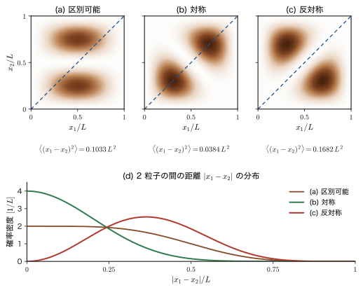
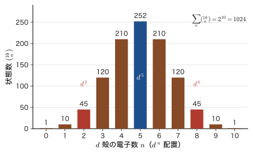
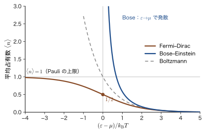
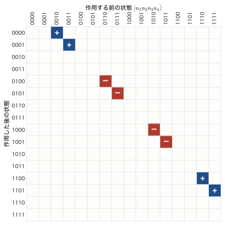

第57章同種粒子と占有数表示 — Bose 粒子と Fermi 粒子の第二量子化
前章では，1 個の調和振動子を「量子が $n$ 個入っている」という言葉で語り直した．しかし，現実の物質は 1 個の振動子ではない．多数の軌道（原子の 1s，2p，……，分子軌道，結晶の Bloch 状態）と，その軌道に入る多数の電子でできている．この章では，前章の「$n$ 個入っている」を，多数の軌道と多数の粒子に広げる．それが占有数表示であり，「第二量子化」とよばれる方法である．
出発点は，同種粒子は区別できないという事実である．古典力学では，2 個の玉に「1 番」「2 番」と名札を付けて軌道を追いかけられた．ところが，2 個の電子には名札を付けられない．波動関数 $\Psi(\bm{x}_1,\bm{x}_2)$ の添字 1，2 は，計算の都合で付けた札にすぎず，物理的な意味をもたない．本当に意味があるのは，「どの軌道に，粒子が何個入っているか」だけである．その結果，電子（Fermi 粒子）では波動関数が反対称になり，「同じ軌道には 1 個しか入れない」という Pauli の排他原理が出る．光子やフォノン（Bose 粒子）では対称になり，「同じ軌道に何個でも入れる」．この違いが，周期表，金属と絶縁体，磁性，レーザー，超流動と，材料の性質の根底にある．
この章では，まず 2 粒子の問題で統計の効果を数値で見る（箱の中の 2 粒子では，対称な状態は粒子が近づき，反対称な状態は離れる）．次に，状態を「占有数の並び」$\ket{n_1,n_2,\dots}$ で指定し，状態の数え上げと，分布関数（Fermi–Dirac 分布と Bose–Einstein 分布）の 1 行の導出を示す．最後に，粒子を 1 個増やす・減らす演算子を，Bose 粒子（交換関係）と Fermi 粒子（反交換関係）について作り，Slater 行列式が $\hat{c}^\dagger\hat{c}^\dagger\cdots\ket{0}$ というただの積になること，水素分子と H$_2$O の電子状態の数え上げ，電子・正孔対の言葉による励起の表し方まで進む．この章の道具は，次章以降の多体ハミルトニアンの書き方（第58章），電子ガスと Hubbard 模型（第59章），光子とフォノン（第60章），さらに姉妹編の「マテリアル計算科学（AD 05）」「固体物理学（AD 06）」「密度汎関数理論（AD 07）」「線形応答理論（AD 08）」のすべての土台になる．
- 同種粒子の区別不能性から，置換演算子 $\hat{P}_{ij}$ の固有値が $\pm1$ に限られること，Bose 粒子は対称・Fermi 粒子は反対称という対称化の要請，Pauli の排他原理が反対称性から出ることを説明できること
- 箱の中の 2 粒子（$n=1,2$）で $\expval{(x_1-x_2)^2}$ を，区別可能 $0.1033\,L^2$，対称 $0.0384\,L^2$，反対称 $0.1682\,L^2$ と厳密に計算し，「力ではない実効的な引力・斥力」（交換孔）を説明できること
- 占有数表示 $\ket{n_1,n_2,\dots}$，真空 $\ket{0}$，粒子数演算子 $\hat{N}$，Fock 空間を説明し，状態数を $M^N$（区別可能），$\binom{N+M-1}{N}$（Bose），$\binom{M}{N}$（Fermi）と数えられること．$d^2$ の 45 状態，$d^5$ の 252 状態を数えられること
- 大分配関数が軌道ごとの積に因数分解されることから，Fermi–Dirac 分布と Bose–Einstein 分布が出ることを示せること
- Bose 粒子の生成・消滅演算子の作用 $\hat{a}_i^\dagger\ket{\dots n_i\dots}=\sqrt{n_i+1}\ket{\dots n_i+1\dots}$ などから，交換関係 $\comm{\hat{a}_i}{\hat{a}_j^\dagger}=\delta_{ij}$ と $\ket{n_1,\dots}=\prod_i(\hat{a}_i^\dagger)^{n_i}/\sqrt{n_i!}\,\ket{0}$ を導き，対称化された波動関数と対応づけられること．Bose 増幅（$n+1$ 倍）を説明できること
- Fermi 粒子の演算子 $\hat{c}_i$，$\hat{c}_i^\dagger$ を，軌道の順序の約束と符号 $(-1)^{\sum_{j\lt i}n_j}$ から定義し，反交換関係 $\acomm{\hat{c}_i}{\hat{c}_j^\dagger}=\delta_{ij}$，$\acomm{\hat{c}_i}{\hat{c}_j}=0$，$(\hat{c}_i^\dagger)^2=0$ を導けること．Jordan–Wigner 変換の行列（$M=2$ と $M=4$）を書き，符号を数え間違えないこと
- Slater 行列式が $\hat{c}_{i_1}^\dagger\cdots\hat{c}_{i_N}^\dagger\ket{0}$ に対応し，内積が $\det\braket{\chi}{\chi'}$ になること，軌道の回転で位相 $\det U$ しか変わらないこと，H$_2$ の $\sigma_{\mathrm g}\alpha\,\sigma_{\mathrm g}\beta$ が共有結合とイオン結合に 1 対 1 で分解されることを示せること
- HF 基底状態 $\ket{\Phi_0}$ からの励起を $\hat{c}_a^\dagger\hat{c}_i$（電子・正孔対）の言葉で書き，H$_2$O（STO-3G）の配置の数（1001 個，$S_z=0$ で 441 個，単励起 40 個，2 電子励起 270 個）を数えられること
もとにしたノート：本章はノートにない内容を補った章である．関連するノート：望月泰英『物理学ノート 量子力学3』 pp. 61–64（第二量子化の導入と，Fermi 粒子の反交換関係への予告）．
57.1 同種粒子の区別不能性と対称化の要請
57.1.1 電子には名札を付けられない
古典力学（AD 03）では，まったく同じ材質・同じ大きさの 2 個のビリヤードの玉でも，区別できた．玉 1 の位置 $\bm{r}_1(t)$ と玉 2 の位置 $\bm{r}_2(t)$ は，それぞれなめらかな曲線を描く．衝突の後でも，その曲線をたどれば「どちらがどちらか」が決まる．つまり，玉には軌道という名札が付いている．
量子力学では，これができない．理由は 3 つある．(i) 粒子の位置は波束の広がりで表され，2 個の波束が重なっている領域では，「どちらの軌道」という概念そのものが成り立たない．(ii) 位置を測って軌道を追跡しようとすれば，測定が状態を乱す（第8章）．(iii) 同じ種類の粒子は，質量・電荷・スピンがまったく同じで，名札の代わりになる性質がない．たとえば，水素原子の中の電子と，Cu の中の電子を区別する印はない．これが同種粒子の区別不能性（indistinguishability of identical particles）である（第33章 33.5 節でも扱った）．
この区別不能性は，実験で確かめられる形をしている．2 個の同種粒子が衝突して散乱する場面（図57.1）を考えよう．2 個の粒子の重心（2 個の粒子の重さの中心）が止まって見える座標系（重心系）では，2 個は互いに逆向きに飛んできて衝突し，やはり互いに逆向きに飛び去る．検出器が，入射の方向から角 $\theta$ の方向に粒子を 1 個見つけたとする．その粒子は，左から来て角度 $\theta$ だけ曲げられたのかもしれないし，右から来て角度 $\pi-\theta$ だけ曲げられたのかもしれない（右から来た粒子は，入射の向きが逆なので，同じ検出器の方向に飛ぶには $\pi-\theta$ だけ曲がればよい）．どちらであったかを見分ける手段がなければ，2 つの経路の確率振幅を足してから 2 乗しなければならない（二重スリットで，どちらのスリットを通ったか分からなければ干渉が現れるのと同じである．第7章）．それぞれの経路の散乱振幅を $f(\theta)$，$f(\pi-\theta)$ と書く（$f(\theta)$ は，入射の方向から角 $\theta$ の方向へ粒子が曲げられる確率振幅で，その絶対値の 2 乗が，その方向への散乱の強さである）と，区別できる粒子の散乱確率は $\abs{f(\theta)}^2+\abs{f(\pi-\theta)}^2$ だが，区別できない粒子ではスピンを考えなければ
\begin{equation} \abs{f(\theta)\pm f(\pi-\theta)}^2=\abs{f(\theta)}^2+\abs{f(\pi-\theta)}^2\pm2\,\Real\bigl[f(\theta)f^*(\pi-\theta)\bigr] \label{eq:57-mott} \end{equation}となる．右辺の最後の項が干渉項であり，$+$ が Bose 粒子，$-$ が（スピンが平行で，空間部分が反対称の）Fermi 粒子である．$\theta=\pi/2$ の方向では $f(\theta)=f(\pi-\theta)$ となるので，反対称の場合は散乱確率が $0$ になり，対称の場合は区別できる粒子の 2 倍になる．スピン $\tfrac12$ で，スピンの向きがそろっていない（非偏極の）電子どうしの散乱では，スピン一重項（重み $1/4$．空間部分は対称）と三重項（重み $3/4$．空間部分は反対称）の平均をとって，$\abs{f(\theta)}^2+\abs{f(\pi-\theta)}^2-\Real\bigl[f(\theta)f^*(\pi-\theta)\bigr]$ となる（Mott の公式の一般的な形）．この場合は $\theta=\pi/2$ でも $0$ にならず，区別できる粒子の半分になる．この種の干渉は，Mott が 1930 年に理論的に示し，$\alpha$ 粒子（He の原子核．スピン $0$ の Bose 粒子）どうしの散乱などの実験で確かめられた．式 \eqref{eq:57-mott} は，「統計」が単なる数え方の問題ではなく，測定にかかる物理的な効果であることを示している．
57.1.2 置換演算子と，固有値が $\pm1$ しかないこと
区別できないとは，粒子のラベルを付け替えても，測定で観測できることは何も変わらない，という意味である．これを数式にしよう．$N$ 個の粒子の波動関数 $\Psi(\bm{x}_1,\dots,\bm{x}_N)$ の引数 $\bm{x}_i=(\bm{r}_i,\sigma_i)$ は，位置とスピンの変数をまとめたものである（第33章 33.4 節）．
定義57.1 置換演算子 $\hat{P}_{ij}$
粒子 $i$ と粒子 $j$ の座標（位置とスピンの変数）を入れ替える演算子 $\hat{P}_{ij}$ を，
\begin{equation} \bigl(\hat{P}_{ij}\Psi\bigr)(\dots,\bm{x}_i,\dots,\bm{x}_j,\dots)=\Psi(\dots,\bm{x}_j,\dots,\bm{x}_i,\dots) \label{eq:57-P} \end{equation}で定める．これは，第33章の交換演算子 $\hat{P}_{12}$ を一般の $i,j$ に広げたものである．
$\hat{P}_{ij}$ は 2 回続けて作用させると元に戻るので，$\hat{P}_{ij}^2=1$ である．このことから，固有値が決まる．$\hat{P}_{ij}\Psi=\lambda\Psi$ の両辺にもう一度 $\hat{P}_{ij}$ を作用させると，$\Psi=\hat{P}_{ij}^2\Psi=\lambda\hat{P}_{ij}\Psi=\lambda^2\Psi$ となるから，$\lambda^2=1$，すなわち
\begin{equation} \lambda=+1\ \ (\text{対称}),\qquad \lambda=-1\ \ (\text{反対称}) \label{eq:57-eig} \end{equation}である．
$\hat{P}_{ij}$ は，エルミート演算子でもあり，ユニタリ演算子でもある．$\hat{P}_{12}$ で確かめよう（スピンの変数も $\bm{x}$ に含め，積分にはスピンの和も含むものとする）．定義 \eqref{eq:57-P} から，
$$ \begin{aligned} \braket{\Phi}{\hat{P}_{12}\Psi}&=\int\Phi^*(\bm{x}_1,\bm{x}_2)\,\Psi(\bm{x}_2,\bm{x}_1)\dd\bm{x}_1\dd\bm{x}_2\\ &=\int\Phi^*(\bm{x}_2,\bm{x}_1)\,\Psi(\bm{x}_1,\bm{x}_2)\dd\bm{x}_1\dd\bm{x}_2=\braket{\hat{P}_{12}\Phi}{\Psi} \end{aligned} $$である．2 行目は，積分変数の名前を $\bm{x}_1\leftrightarrow\bm{x}_2$ と付け替えたもので，積分の値は変わらない．よって $\hat{P}_{12}$ はエルミート演算子である（固有値が実数であることとも合う）．$\hat{P}_{12}^2=1$ と合わせると $\hat{P}_{12}^\dagger\hat{P}_{12}=\hat{P}_{12}^2=1$ となり，ユニタリでもある．つまり，粒子の名前を付け替えても，状態どうしの内積（確率振幅）は変わらない．
次に，ハミルトニアンとの関係を考える．同種粒子のハミルトニアンは，粒子のラベルを入れ替えても変わらない．たとえば，原子核（電荷 $Ze_0$）のまわりの 2 個の電子のハミルトニアンは
$$ \hat{H}=-\frac{\hbar^2}{2m_{\mathrm e}}\bigl(\nabla_1^2+\nabla_2^2\bigr)-\frac{Ze_0^2}{4\pi\varepsilon_0}\left(\frac{1}{r_1}+\frac{1}{r_2}\right)+\frac{e_0^2}{4\pi\varepsilon_0\abs{\bm{r}_1-\bm{r}_2}} $$であり，添字 1 と 2 を入れ替えても同じ式になる．したがって，$\hat{H}\Psi$ の引数を入れ替えたものは，引数を入れ替えた $\Psi$ に $\hat{H}$ を作用させたものに等しく，
\begin{equation} \comm{\hat{H}}{\hat{P}_{ij}}=0 \label{eq:57-HP} \end{equation}が成り立つ．これは重要な結論を導く．
導出：対称性は時間がたっても保たれる
時刻 $t=0$ に $\hat{P}_{ij}\Psi(0)=\lambda\Psi(0)$（$\lambda=\pm1$）だったとする．時間を含む Schrödinger 方程式 $i\hbar\,\partial_t\Psi=\hat{H}\Psi$ の両辺に $\hat{P}_{ij}$ を作用させ，式 \eqref{eq:57-HP} を使うと，
$$ i\hbar\,\partial_t\bigl(\hat{P}_{ij}\Psi\bigr)=\hat{P}_{ij}\hat{H}\Psi=\hat{H}\bigl(\hat{P}_{ij}\Psi\bigr) $$となる．つまり $\hat{P}_{ij}\Psi(t)$ も同じ方程式の解である．また $\lambda\Psi(t)$ も同じ方程式の解であり，$t=0$ では $\hat{P}_{ij}\Psi(0)=\lambda\Psi(0)$ で両者が一致する．微分方程式の初期値問題の解は一意なので，すべての時刻で $\hat{P}_{ij}\Psi(t)=\lambda\Psi(t)$ である．
（導出終わり）
したがって，「ある粒子の系が対称か反対称か」は，時間がたっても変わらない不変量である．2 粒子の場合，ハミルトニアンの固有状態は，$\hat{H}$ と $\hat{P}_{12}$ が可換なので，対称か反対称のどちらかに選べる．$N\ge3$ では，異なる $\hat{P}_{ij}$ どうしが交換しないので，すべての入れ替えに対して同時に $+1$（または $(-1)^P$）の固有値をもつ状態（完全対称・完全反対称な状態）のほかに，対称性が混ざった状態（混合対称性の状態）も存在する．ただし，$\hat{H}$ はすべての $\hat{P}_{ij}$ と可換なので，完全対称な状態の空間と完全反対称な状態の空間のそれぞれを，自分自身の中へ写す．したがって，それぞれの空間の中でハミルトニアンの固有状態を選べる．しかし，ハミルトニアンの対称性だけでは，粒子がどちらの空間に属するかは決まらない．電子は完全反対称の空間に，光子は完全対称の空間に属する，というのは自然界の実験事実である（公理57.1）．
57.1.3 対称化の要請と Pauli の排他原理
この項と次の 57.1.4 項は，第33章 33.5 節で電子について見た対称化の要請と Pauli の排他原理を，粒子の種類に依らない形で整理し直し，Bose 粒子と Fermi 粒子を並べて扱うものである（第二量子化の出発点として，置換演算子の言葉で書く）．
公理57.1 対称化の要請
$N$ 個の同種粒子の波動関数は，任意の 2 個の粒子の入れ替えに対して，粒子の種類ごとに決まった符号をもつ．
\begin{equation} \hat{P}_{ij}\Psi=\begin{cases}+\Psi & \text{（Bose 粒子，ボソン）}\\ -\Psi & \text{（Fermi 粒子，フェルミオン）}\end{cases}\qquad(\text{任意の }i\ne j) \label{eq:57-symm} \end{equation}一般の置換 $P$（$N$ 個の添字の並べ替え）に対しては，Bose 粒子で $\hat{P}\Psi=\Psi$，Fermi 粒子で $\hat{P}\Psi=(-1)^P\Psi$ である．$(-1)^P$ は，$P$ が偶置換なら $+1$，奇置換なら $-1$ である．
数学の道具：置換とその符号
$N$ 個の添字 $1,\dots,N$ の並べ替え $P$ は，2 個ずつの入れ替え（互換）の積で表せる．偶数回の互換で作れる置換が偶置換，奇数回の互換で作れる置換が奇置換である．$P$ を何通りの互換の積で書いても，偶奇は変わらない（大学数学 第8章 8.2）．$N$ 個の添字の置換は全部で $N!$ 個あり，そのうち偶置換と奇置換がそれぞれ半分である（$N\ge2$）．行列式は，この符号を使って $\det[M_{ij}]=\sum_P(-1)^P\prod_iM_{i,P(i)}$ と定義される（8.3）．
どの粒子が Bose 粒子でどの粒子が Fermi 粒子かは，その粒子のスピンで決まる．
法則57.1 スピンと統計の関係
スピンが整数（$0,1,2,\dots$）の粒子は Bose 粒子であり，スピンが半整数（$\tfrac12,\tfrac32,\dots$）の粒子は Fermi 粒子である．
この関係は，Fierz（1939 年）と Pauli（1940 年）が，相対論的な場の量子論の一般的な仮定（因果律とエネルギーの下限）から証明した．本書ではこれを実験事実として使う（第23章 23.4 節，AD 03 第52章 52.4 節）．原子や原子核のような複合粒子の統計は，含まれる Fermi 粒子の個数の偶奇で決まる．偶数個の Fermi 粒子でできた粒子は，全体として Bose 粒子のように振る舞い，奇数個なら Fermi 粒子のように振る舞う．入れ替えると，含まれる Fermi 粒子が 1 個ずつ入れ替わるので，符号が $(-1)^{\text{個数}}$ だけかかるからである．
| スピン | 統計 | 備考 | |
|---|---|---|---|
| 電子，陽子，中性子 | $\tfrac12$ | Fermi | 物質をつくる基本粒子 |
| $^3$He 原子 | $\tfrac12$ | Fermi | 陽子 2 個，中性子 1 個，電子 2 個（計 5 個の Fermi 粒子） |
| 光子 | $1$ | Bose | 電磁波の量子（第60章） |
| $^4$He 原子 | $0$ | Bose | 陽子 2 個，中性子 2 個，電子 2 個（計 6 個） |
| $\pi$ 中間子 | $0$ | Bose | |
| フォノン | — | Bose | 格子振動の量子（粒子ではなく集団励起．第60章） |
Bose 粒子と Fermi 粒子の違いが，物質の姿を決めている．
応用：統計が決める物質の姿
Fermi 粒子：電子が反対称であることから，1 つの軌道に入れる電子は（スピンを含めて）1 個だけになる．原子の電子は内側の軌道から順に積み上がり，周期表の殻構造ができる（第34章）．金属では，電子が最低のエネルギー準位から高い準位まで順に詰まり，Fermi エネルギーが数 eV に達する（第10章 10.7 節）．白色矮星が自分の重力でつぶれずにいられるのも，電子がこれ以上，狭い場所に押し込めないことによる．
Bose 粒子：同じ状態に何個でも入れるので，粒子が多数そろって 1 つの状態に入ることができる．レーザー光（多数の光子が 1 つのモードに入る．第53章），$^4$He の超流動（約 $2.17\ \mathrm{K}$ 以下），希薄な原子気体の Bose–Einstein 凝縮（1995 年に実現）はその例である（AD 03 52.10 節）．
57.1.4 2 粒子の状態と Pauli の排他原理
もっとも簡単な場合として，2 個の粒子が，互いに直交する規格化された 1 粒子状態（スピン軌道）$\chi_a$，$\chi_b$ に入っている状態を作ろう．$\braket{\chi_a}{\chi_b}=0$，$\braket{\chi_a}{\chi_a}=\braket{\chi_b}{\chi_b}=1$ とする．粒子 1 が $\chi_a$，粒子 2 が $\chi_b$ にいる積の状態 $\chi_a(\bm{x}_1)\chi_b(\bm{x}_2)$（Hartree 積）は，$\hat{P}_{12}$ を作用させると $\chi_a(\bm{x}_2)\chi_b(\bm{x}_1)$ になり，対称でも反対称でもない（粒子に名札を付けてしまっている）．そこで，2 つの積を対称または反対称に組み合わせる．
定理57.1 2 粒子の対称状態と反対称状態
直交規格化された 1 粒子状態 $\chi_a$，$\chi_b$（$a\ne b$）に 2 個の粒子が入った状態は，
\begin{equation} \Psi_\pm(\bm{x}_1,\bm{x}_2)=\frac{1}{\sqrt2}\Bigl[\chi_a(\bm{x}_1)\chi_b(\bm{x}_2)\pm\chi_b(\bm{x}_1)\chi_a(\bm{x}_2)\Bigr] \label{eq:57-psipm} \end{equation}である．$\Psi_+$ は対称（Bose 粒子），$\Psi_-$ は反対称（Fermi 粒子）であり，どちらも規格化されている．
証明
対称性：$\hat{P}_{12}$ は 2 つの積を入れ替えるので，$\hat{P}_{12}\Psi_\pm=\dfrac{1}{\sqrt2}\bigl[\chi_a(\bm{x}_2)\chi_b(\bm{x}_1)\pm\chi_b(\bm{x}_2)\chi_a(\bm{x}_1)\bigr]=\pm\Psi_\pm$．
規格化：$\braket{\Psi_\pm}{\Psi_\pm}$ を展開すると，4 つの項ができる．
$$ \tfrac12\Bigl[\braket{\chi_a}{\chi_a}\braket{\chi_b}{\chi_b}+\braket{\chi_b}{\chi_b}\braket{\chi_a}{\chi_a}\pm\braket{\chi_a}{\chi_b}\braket{\chi_b}{\chi_a}\pm\braket{\chi_b}{\chi_a}\braket{\chi_a}{\chi_b}\Bigr]=\tfrac12\bigl[1+1\pm0\pm0\bigr]=1 $$（第 3，4 項は，1 粒子状態の直交性 $\braket{\chi_a}{\chi_b}=0$ により $0$）．
（証明終わり）
ここで，2 個の粒子が同じ状態 $\chi_a$ に入る場合 $b=a$ を考える．Fermi 粒子では $\Psi_-=\dfrac{1}{\sqrt2}\bigl[\chi_a(\bm{x}_1)\chi_a(\bm{x}_2)-\chi_a(\bm{x}_1)\chi_a(\bm{x}_2)\bigr]=0$ となり，波動関数が恒等的に $0$ になる．つまり，そのような状態は存在しない．これが Pauli の排他原理（Pauli exclusion principle）である：
定理57.2 Pauli の排他原理
2 個の Fermi 粒子が，同じ 1 粒子状態（位置の軌道とスピンの向きの両方が同じ）に入ることはできない．同じことを，波動関数の言葉で言うと，Fermi 粒子の波動関数は，2 個の粒子の座標（位置とスピン）が等しい点 $\bm{x}_1=\bm{x}_2$ で $0$ になる：$\Psi(\dots,\bm{x},\dots,\bm{x},\dots)=0$．
Pauli が 1925 年に原子の殻構造を説明するために提案したときは，「4 つの量子数がすべて等しい電子は 2 個以上ない」という形だった（4 つ目の量子数が電子のスピンの向きに当たることは，同じ 1925 年のうちに Uhlenbeck と Goudsmit の提案で明らかになった．現在の書き方では $(n,l,m_l,m_s)$ である）．現在では，電子の波動関数が反対称であるという一般的な性質から導かれる結論として理解されている．なお，「同じ状態」には，スピンの向きも含まれる．$\varphi_a(\bm{r})\,\alpha$ と $\varphi_a(\bm{r})\,\beta$ は別々のスピン軌道なので，同じ空間軌道 $\varphi_a$ に電子は，スピンが反対の 2 個まで入れる．一方，Bose 粒子では，$b=a$ のとき $\Psi_+=\dfrac{2}{\sqrt2}\chi_a(\bm{x}_1)\chi_a(\bm{x}_2)=\sqrt2\,\chi_a(\bm{x}_1)\chi_a(\bm{x}_2)$ で，規格化し直して $\chi_a(\bm{x}_1)\chi_a(\bm{x}_2)$ となる．2 個の粒子が同じ状態に入った，許される状態である．
57.1.5 $N$ 粒子の場合 — Slater 行列式と永久式
粒子が $N$ 個のときも，考え方は同じである．Fermi 粒子では，$N$ 個の互いに異なるスピン軌道 $\chi_1,\dots,\chi_N$ から，Slater 行列式
\begin{equation} \Phi(\bm{x}_1,\dots,\bm{x}_N)=\frac{1}{\sqrt{N!}}\det\bigl[\chi_j(\bm{x}_i)\bigr]=\frac{1}{\sqrt{N!}}\sum_P(-1)^P\prod_{i=1}^{N}\chi_{P(i)}(\bm{x}_i) \label{eq:57-slater} \end{equation}を作る（行が粒子，列が軌道．第33章 33.6 節）．行列式の性質（大学数学 第8章 8.5）から，(1) 2 つの行（粒子）を入れ替えると符号が変わる（反対称性），(2) 2 つの列（軌道）が等しいと $0$（排他原理），が出る．
Bose 粒子では，符号 $(-1)^P$ を付けずに，すべての置換について足す．$N$ 個の粒子が軌道 $\varphi_1,\varphi_2,\dots$ に，それぞれ $n_1,n_2,\dots$ 個ずつ入る状態（$\sum_jn_j=N$）の波動関数は，
\begin{equation} \Psi(\bm{x}_1,\dots,\bm{x}_N)=\frac{1}{\sqrt{N!\,\prod_jn_j!}}\sum_{P}\varphi_{k_{P(1)}}(\bm{x}_1)\,\varphi_{k_{P(2)}}(\bm{x}_2)\cdots\varphi_{k_{P(N)}}(\bm{x}_N) \label{eq:57-perm} \end{equation}である．ここで $k_1,\dots,k_N$ は，軌道の番号を，軌道 $j$ を $n_j$ 回ずつ並べたもの（たとえば $n_1=2$，$n_2=1$ なら $(k_1,k_2,k_3)=(1,1,2)$）であり，$\sum_P$ は $N!$ 個の置換全体にわたる（符号のない行列式にあたる和を永久式（permanent）という）．$N=2$，$n_a=n_b=1$ なら式 \eqref{eq:57-psipm} の $\Psi_+$ に，$n_a=2$ なら $\chi_a(\bm{x}_1)\chi_a(\bm{x}_2)$ になる．規格化因子の意味は，57.4 節で考える．
では，式 \eqref{eq:57-slater} のような波動関数を，そのまま書き続けていくことにどれだけの意味があるだろうか．$N=10$ の Slater 行列式は $10!=3\,628\,800$ 個の項の和である．ところが，「どの軌道に粒子が入っているか」という情報だけを取り出すと，わずか 10 個の軌道の名前を並べるだけで済む．この簡潔な言葉が，次の節から導入する占有数表示である．その前に，式 \eqref{eq:57-slater} の具体的な形を，$N=3$ で確かめておこう．
例題57.1 3 個の Fermi 粒子を 3 つの軌道に入れる
3 個の Fermi 粒子を，3 つのスピン軌道 $\chi_a$，$\chi_b$，$\chi_c$ に入れた Slater 行列式の 6 個の項をすべて書き下せ．また，2 つの軌道が同じ（$\chi_b=\chi_a$）なら $\Phi=0$ となることを，(1) 6 個の項の相殺で，(2) 行列式の性質で示せ．
解答 行を粒子 1，2，3，列を軌道 $a,b,c$ として行列式を展開する．置換 $P$ の符号は，恒等置換（$a\to1,b\to2,c\to3$）と 2 つの巡回置換が $+$（偶置換 3 個），3 つの互換が $-$（奇置換 3 個）である．
\begin{align} \Phi&=\frac{1}{\sqrt6}\begin{vmatrix}\chi_a(\bm{x}_1)&\chi_b(\bm{x}_1)&\chi_c(\bm{x}_1)\\ \chi_a(\bm{x}_2)&\chi_b(\bm{x}_2)&\chi_c(\bm{x}_2)\\ \chi_a(\bm{x}_3)&\chi_b(\bm{x}_3)&\chi_c(\bm{x}_3)\end{vmatrix}\notag\\ &=\frac{1}{\sqrt6}\Bigl[\chi_a(1)\chi_b(2)\chi_c(3)-\chi_a(1)\chi_c(2)\chi_b(3)-\chi_b(1)\chi_a(2)\chi_c(3)\notag\\ &\qquad\ \ +\chi_b(1)\chi_c(2)\chi_a(3)+\chi_c(1)\chi_a(2)\chi_b(3)-\chi_c(1)\chi_b(2)\chi_a(3)\Bigr] \end{align}（簡潔に $\chi_a(\bm{x}_1)=\chi_a(1)$ などと書いた）．最初の項が対角成分の積，2，3，6 番目が 2 つの軌道（または粒子）を入れ替えた項（符号 $-$），4，5 番目が 3 つを巡回させた項（符号 $+$）である．
(1) $\chi_b=\chi_a$ とおく．6 個の項は順に $\chi_a(1)\chi_a(2)\chi_c(3)$，$-\chi_a(1)\chi_c(2)\chi_a(3)$，$-\chi_a(1)\chi_a(2)\chi_c(3)$，$+\chi_a(1)\chi_c(2)\chi_a(3)$，$+\chi_c(1)\chi_a(2)\chi_a(3)$，$-\chi_c(1)\chi_a(2)\chi_a(3)$ となる．1 番目と 3 番目，2 番目と 4 番目，5 番目と 6 番目がそれぞれ符号だけが反対で打ち消し合い，$\Phi=0$．
(2) $\chi_b=\chi_a$ とおくと，行列の第 1 列と第 2 列が等しくなる．行列式の性質「2 つの列が等しければ行列式は $0$」により，$\Phi=0$ である（2 つの列を入れ替えると符号が変わり $\det=-\det$，よって $\det=0$）．これは 6 項の相殺を 1 行で言い換えたものであり，$N=10$ のように項が $3\,628\,800$ 個あっても同じ 1 行で済む．
57.1.6 発展：なぜ対称と反対称の 2 通りだけか — 3 次元と 2 次元
発展：3 次元の統計は 2 通り，2 次元では別の可能性もある
ここまでの議論で，固有値が $\pm1$ になる理由は $\hat{P}_{ij}^2=1$ であった．もう少し一般に考えてみよう．$N$ 個の粒子の置換全体は，$N!$ 個の元をもつ群（対称群 $S_N$）をなす．同種粒子の状態が，置換で 1 つの状態のまま（定数倍だけ変わる）でいるためには，その定数倍が $S_N$ の 1 次元表現になっていなければならない．$S_N$ の 1 次元表現は，すべての置換に $+1$ を対応させる表現（対称）と，置換の符号 $(-1)^P$ を対応させる表現（反対称）の 2 つだけである．この 2 つが，Bose 粒子と Fermi 粒子に対応する．置換群には高次元の表現もあり，それに対応する統計（パラ統計）も理論上は考えられるが，自然界の粒子で見つかっていない．
もう一つの見方が，空間の次元である．粒子 1 と粒子 2 を，位置を入れ替えるように動かす（交換する）ことを考える．交換を 2 回繰り返すと，一方の粒子が他方の粒子のまわりを 1 周する経路になる．3 次元では，この周回の経路を，連続的に変形して 1 点に縮められる（3 次元なら，輪を縦に持ち上げて，もう一方の粒子の上を飛び越えさせ，ほどくことができるので）．つまり，交換を 2 回行うことは何もしないことと同じで，交換で生じる位相 $e^{i\theta}$ は $e^{2i\theta}=1$，すなわち $\theta=0$（Bose）か $\theta=\pi$（Fermi）に限られる．ところが，2 次元では，粒子のまわりを 1 周する輪は，その粒子を避けてほどくことができない．そのため，位相 $e^{i\theta}$ の $\theta$ は $0$ と $\pi$ 以外の値でもよく，エニオン（anyon．Wilczek が 1982 年に命名）とよばれる粒子が考えられる．分数量子 Hall 効果の準粒子などが，実際にこの性質をもつと考えられている．これらは 3 次元の物質の電子や原子には関係がなく，本書で使う統計は，Bose と Fermi の 2 通りだけである．
57.2 交換孔 — 統計が生む「力ではない力」
57.2.1 問題の設定 — 2 粒子の近さを測る
対称・反対称という符号の違いは，何を変えるのだろうか．同じ箱の中の 2 電子は，すでに第33章 33.6.7 項（例題33.10，図33.7）で，Hartree 積・反対称・対称の 3 つの空間波動関数について調べ，$\expval{(x_1-x_2)^2}$ の値 $0.1033\,L^2$，$0.1682\,L^2$，$0.0384\,L^2$ と Fermi 孔を見た．ここでは，その結果を一般の直交する 2 つの軌道に成り立つ公式（公式57.1）に広げ，Bose 粒子と Fermi 粒子に共通の「交換孔」として意味づけ直す．設定は第33章と同じで，幅 $L$ の 1 次元の無限井戸（第10章）の中に，質量の等しい 2 個の粒子を入れる．座標は $0\le x\le L$ とし，1 粒子の状態は $\psi_n(x)=\sqrt{2/L}\,\sin(n\pi x/L)$ である．2 個の粒子の間に力ははたらかないとし，粒子 1 と粒子 2 が，それぞれ $\psi_1$ と $\psi_2$（$n=1$ と $n=2$）に入っている状態を考える．次の 3 つの場合を比べる．
- (a) 区別可能な粒子：$\Psi_{\mathrm D}(x_1,x_2)=\psi_1(x_1)\psi_2(x_2)$（名札を付けた粒子．積）
- (b) 対称（Bose 粒子）：$\Psi_+=\dfrac{1}{\sqrt2}\bigl[\psi_1(x_1)\psi_2(x_2)+\psi_2(x_1)\psi_1(x_2)\bigr]$
- (c) 反対称（Fermi 粒子．スピンは平行）：$\Psi_-=\dfrac{1}{\sqrt2}\bigl[\psi_1(x_1)\psi_2(x_2)-\psi_2(x_1)\psi_1(x_2)\bigr]$
2 個の粒子がどれだけ近くにいるかの目安として，距離の 2 乗の期待値 $\expval{(x_1-x_2)^2}$ を比べる．これは，同時確率密度 $\abs{\Psi(x_1,x_2)}^2$ による平均である．
57.2.2 交換項の公式
まず，一般の直交する 2 つの実数の軌道 $a,b$（これから $\psi_1,\psi_2$ を入れる）について，3 つの場合の $\expval{(x_1-x_2)^2}$ を求めておこう．位置 $x$ の 1 粒子の期待値を $\expval{x}_a=\mel{a}{\hat{x}}{a}$，$\expval{x^2}_a=\mel{a}{\hat{x}^2}{a}$，軌道の間の行列要素を $x_{ab}=\mel{a}{\hat{x}}{b}$ と書く（$x_{ab}$ は，第52章で見た電気双極子遷移の行列要素と同じ形の量である）．
公式57.1 対称・反対称状態の距離の 2 乗平均
直交規格化された実数の 1 粒子状態 $a\ne b$ に対して，区別可能な積状態 $\Psi_{\mathrm D}=a(x_1)b(x_2)$ と，対称・反対称状態 $\Psi_\pm$（式 \eqref{eq:57-psipm}）の距離の 2 乗平均は，
\begin{align} \expval{(x_1-x_2)^2}_{\mathrm D}&=\expval{x^2}_a+\expval{x^2}_b-2\expval{x}_a\expval{x}_b\equiv D,\label{eq:57-dist-D}\\ \expval{(x_1-x_2)^2}_{\pm}&=D\mp2\abs{x_{ab}}^2 \label{eq:57-dist-pm} \end{align}である．符号は，対称（$+$）で距離が縮み，反対称（$-$）で距離が伸びる．
証明
$(x_1-x_2)^2=x_1^2+x_2^2-2x_1x_2$ の期待値を，$\Psi_\pm$ で求める．$\Psi_\pm=\tfrac{1}{\sqrt2}\bigl(\ket{ab}\pm\ket{ba}\bigr)$ と書く．ここで $\ket{ab}$ は「粒子 1 が $a$，粒子 2 が $b$」の積状態である．
$x_1^2$ の期待値：$\mel{\Psi_\pm}{x_1^2}{\Psi_\pm}=\tfrac12\bigl[\mel{ab}{x_1^2}{ab}+\mel{ba}{x_1^2}{ba}\pm\mel{ab}{x_1^2}{ba}\pm\mel{ba}{x_1^2}{ab}\bigr]$．第 3，4 項は，粒子 2 の部分が $\braket{b}{a}=0$（または $\braket{a}{b}=0$）を含むので $0$ である．よって $\expval{x_1^2}_\pm=\tfrac12\bigl(\expval{x^2}_a+\expval{x^2}_b\bigr)$．$x_2^2$ も同じで，和は $\expval{x_1^2+x_2^2}_\pm=\expval{x^2}_a+\expval{x^2}_b$ となる．
$x_1x_2$ の期待値：$\mel{\Psi_\pm}{x_1x_2}{\Psi_\pm}=\tfrac12\bigl[\mel{ab}{x_1x_2}{ab}+\mel{ba}{x_1x_2}{ba}\pm\mel{ab}{x_1x_2}{ba}\pm\mel{ba}{x_1x_2}{ab}\bigr]$ で，各項を粒子 1，粒子 2 の因子に分けると，
$$ \mel{ab}{x_1x_2}{ab}=\expval{x}_a\expval{x}_b,\qquad \mel{ab}{x_1x_2}{ba}=\mel{a}{\hat{x}}{b}\,\mel{b}{\hat{x}}{a}=x_{ab}x_{ba}=\abs{x_{ab}}^2 $$（$\hat{x}$ はエルミートなので $x_{ba}=x_{ab}^*$）．$\mel{ba}{x_1x_2}{ba}=\expval{x}_a\expval{x}_b$，$\mel{ba}{x_1x_2}{ab}=\abs{x_{ab}}^2$ も同様である．したがって $\expval{x_1x_2}_\pm=\expval{x}_a\expval{x}_b\pm\abs{x_{ab}}^2$．
以上を合わせると $\expval{(x_1-x_2)^2}_\pm=\expval{x^2}_a+\expval{x^2}_b-2\bigl(\expval{x}_a\expval{x}_b\pm\abs{x_{ab}}^2\bigr)=D\mp2\abs{x_{ab}}^2$．区別可能な積状態では交換項がなく，$D$ そのものである．
（証明終わり）
交換項 $\mp2\abs{x_{ab}}^2$ は，統計だけから来る効果である．2 個の粒子の間に力を仮定していないのに，同種粒子であるというだけで，対称なら互いに近づき，反対称なら互いに離れるという偏りが生じる．
例題57.2 無限井戸の 2 粒子 ($n=1,2$) の交換孔を公式57.1 から求める
幅 $L$ の無限井戸の $\psi_1$，$\psi_2$ について，区別可能，対称，反対称の場合の $\expval{(x_1-x_2)^2}$ を，$L^2$ を単位として厳密に求め，数値（有効数字 4 桁）で表せ．
解答 公式57.1 に必要な 3 つの量は，第10章（例題10.4）と第33章 例題33.10で計算済みである（部分積分の計算はそちらを見よ）：
- $\expval{x}_n=L/2$（$n=1,2$ ともに）
- $\expval{x^2}_n=L^2\Bigl(\dfrac13-\dfrac{1}{2n^2\pi^2}\Bigr)$
- $x_{12}=\mel{\psi_1}{\hat{x}}{\psi_2}=-\dfrac{16L}{9\pi^2}\approx-0.1801\,L$
これらから，$D=\expval{x^2}_1+\expval{x^2}_2-2\cdot\dfrac{L}{2}\cdot\dfrac{L}{2}=L^2\Bigl[\dfrac23-\dfrac{1}{2\pi^2}-\dfrac{1}{8\pi^2}-\dfrac12\Bigr]=L^2\Bigl[\dfrac16-\dfrac{5}{8\pi^2}\Bigr]\approx0.1033\,L^2$．交換項は $2\abs{x_{12}}^2=\dfrac{512}{81\pi^4}L^2\approx0.0649\,L^2$ である．したがって，
\begin{align} \text{区別可能：}&\ \expval{(x_1-x_2)^2}_{\mathrm D}=\Bigl(\frac16-\frac{5}{8\pi^2}\Bigr)L^2=0.1033\,L^2,\notag\\ \text{対称：}&\ \expval{(x_1-x_2)^2}_+=D-2\abs{x_{12}}^2=0.1033\,L^2-0.0649\,L^2=0.0384\,L^2,\notag\\ \text{反対称：}&\ \expval{(x_1-x_2)^2}_-=D+2\abs{x_{12}}^2=0.1033\,L^2+0.0649\,L^2=0.1682\,L^2.\notag \end{align}区別可能な粒子を基準にして，対称な粒子は約 $63\ \%$ 近づき（$0.0384/0.1033=0.372$），反対称な粒子は約 $63\ \%$ 余計に離れる（$0.1682/0.1033=1.628$）．この値は第33章 例題33.10 と同じである（そこでは $\Psi_\pm$ の確率密度を直接積分して求めた．ここでは公式57.1 の交換項 $\mp2\abs{x_{ab}}^2$ として，同じ結果が出ることを確かめた）．

例題57.3 同じ位置に見いだされる確率と，量子井戸の中の 2 電子の距離
(1) 例題57.2 の 3 つの状態について，2 個の粒子が同じ位置 $x_1=x_2=L/4$ にいる確率密度 $\abs{\Psi(L/4,L/4)}^2$ を求めよ．(2) 幅 $L=10\ \mathrm{nm}$ の GaAs の量子井戸に閉じ込められた 2 個の電子で，スピンが平行な組（三重項．空間部分が反対称）と，スピン一重項の組（空間部分が対称．$\psi_1,\psi_2$ に 1 個ずつ）について，粒子間距離の 2 乗平均の平方根（rms 距離）を，区別可能な場合と比べよ．ただし電子間の Coulomb 反発は考えない（有効質量は，距離を $L$ の単位で測る限り結果に影響しない）．
解答 (1) $\psi_1(L/4)=\sqrt{2/L}\sin\dfrac{\pi}{4}=\dfrac{1}{\sqrt{L}}$，$\psi_2(L/4)=\sqrt{2/L}\sin\dfrac{\pi}{2}=\sqrt{\dfrac{2}{L}}$ である．区別可能な積は $\Psi_{\mathrm D}(L/4,L/4)=\psi_1\psi_2=\dfrac{\sqrt2}{L}$ なので，$\abs{\Psi_{\mathrm D}}^2=\dfrac{2}{L^2}$．対称では $\Psi_+=\dfrac{1}{\sqrt2}\bigl[\psi_1\psi_2+\psi_2\psi_1\bigr]=\sqrt2\,\psi_1\psi_2=\dfrac{2}{L}$ で，$\abs{\Psi_+}^2=\dfrac{4}{L^2}$（区別可能の 2 倍）．反対称では $\Psi_-=\dfrac{1}{\sqrt2}\bigl[\psi_1\psi_2-\psi_2\psi_1\bigr]=0$，$\abs{\Psi_-}^2=0$ である．つまり，同じ位置での確率密度は $(\mathrm{D},+,-)=(2,4,0)/L^2$．
(2) rms 距離は $\sqrt{\expval{(x_1-x_2)^2}}$ で，例題57.2 の結果を用いる．区別可能：$\sqrt{0.1033}\,L=0.3215\,L=3.2\ \mathrm{nm}$，対称：$\sqrt{0.0384}\,L=0.1961\,L=2.0\ \mathrm{nm}$，反対称：$\sqrt{0.1682}\,L=0.4102\,L=4.1\ \mathrm{nm}$．スピンが平行な（三重項の）2 電子は，反対称な空間状態に入るので，平均して $4.1\ \mathrm{nm}$ 離れ，一重項の対（空間部分が対称）の $2.0\ \mathrm{nm}$ の約 2 倍の距離をとる．近いほど Coulomb 反発エネルギーが大きいので，同じ空間軌道の組 $\psi_1,\psi_2$ から作った状態のうち，三重項の方が平均距離が長く，Coulomb 反発が小さい（この計算自体は Coulomb 反発を考えていない）．
57.2.3 交換孔の意味 — 力ではない「力」
図57.2(c) のように，Fermi 粒子の波動関数は，2 個の粒子が同じ点にいる対角線 $x_1=x_2$ の上で $0$ になる（定理57.2）．この，「一方の粒子のまわりに，もう一方が近づけない領域ができる」現象を，交換孔（exchange hole．または Fermi 孔）という．Coulomb 力による相関と違い，電荷を仮定せずに，反対称性だけで現れる．反対称状態の距離の 2 乗平均 $0.1682\,L^2$ は，対称状態の $0.0384\,L^2$ の 4.4 倍にもなる．粒子 2 個の間に力はないのに，まるで反発し合っている（Fermi 粒子），あるいは引き合っている（Bose 粒子）ように見える．これを統計的な引力・斥力（交換による実効的な力）とよぶ．
注意：これは本当の力ではない
ここで得た距離の偏りは，ハミルトニアンに粒子間の相互作用項がまったくない状況で現れたものである．粒子の間に力がはたらいているわけではなく，「同種粒子の状態は対称（または反対称）でなければならない」という要請が，許される状態の形を制限した結果である．また，$\expval{(x_1-x_2)^2}$ は 2 個の粒子の近さの粗い目安にすぎない．たとえば $n=1$ と $n=3$ の組では，$x_{13}=0$ となり，交換項が消えて 3 つの状態の距離の 2 乗平均がすべて等しくなるが，対角線の上の様子（交換孔）は依然として残る（演習57.8）．
交換孔は，粒子の間に本物の相互作用（電子の Coulomb 反発）があるときに，エネルギーの差として現れる．2 個の電子が近づくほど Coulomb 反発のエネルギー $e_0^2/(4\pi\varepsilon_0 r_{12})$ は大きくなるので，同じ軌道の組から作った状態を比べると，空間部分が反対称で電子が離れている状態（スピンが平行．三重項）は，空間部分が対称の状態（スピン一重項）よりも Coulomb 反発が小さく，エネルギーが低い．これが，He 原子の $1\mathrm{s}2\mathrm{s}$ 配置で三重項（スピン平行）が一重項より約 $0.80\ \mathrm{eV}$ 低いことの理由であり（第33章 33.5.3 節，第35章の交換積分 $J_{ab}$．差は $2J_{ab}$ である），Hund の規則の第 1 則「スピンが最大の項が最も低い」（第34章 34.6 節）を理解する手がかりの一つである（多電子原子でのこの規則の起源の詳細には，電子間反発の減少だけでなく，軌道の大きさの変化による核との引力の違いなども関わる）．なお，H$_2$ 分子の基底状態が一重項なのは，2 個の電子が同じ結合性軌道 $\sigma_{\mathrm g}$ に入れるためで，異なる軌道の組の比較ではない（57.6 節）．交換孔の定量的な扱いは，Hartree–Fock 近似の交換項（第35，36章）に引き継がれる．
応用：磁石の強さを生む「交換」
鉄やコバルトが強磁性を示すのは，電子スピンの向きをそろえると，空間部分が反対称になって電子どうしが離れ，Coulomb 反発のエネルギーが下がるからである．つまり，スピンの向きをそろえる力は，電子の磁気モーメントどうしの磁気的な力（磁気双極子相互作用）ではなく，Coulomb 相互作用と反対称性の組み合わせ（交換相互作用）である．隣り合う原子の磁気双極子相互作用は $10^{-5}\ \mathrm{eV}$ 程度以下と小さく，強磁性の転移温度（鉄の Curie 温度は約 $1040\ \mathrm{K}$ で，$k_{\mathrm B}T\approx0.09\ \mathrm{eV}$ に相当する）を説明できない．交換相互作用の大きさは物質によって異なり，$0.01\ \mathrm{eV}$ から $0.1\ \mathrm{eV}$ 程度である．（Fe，Co，Ni のような金属の強磁性は，電子が結晶全体に広がった状態での交換（遍歴電子磁性．固体物理学（AD 06））によるもので，ここで述べた説明は，交換の起源をつかむための単純化である．）
57.3 占有数表示と Fock 空間
57.3.1 「誰がどの軌道に」から「どの軌道に何個」へ
粒子が区別できないなら，「粒子 1 は軌道 $a$，粒子 2 は軌道 $b$」という情報は，物理的な意味をもたない．意味があるのは，「軌道 $a$ に 1 個，軌道 $b$ に 1 個」という占有の様子だけである．実際，式 \eqref{eq:57-psipm} の $\Psi_\pm$ も式 \eqref{eq:57-slater}，\eqref{eq:57-perm} の波動関数も，どの軌道が何個使われているかを指定すれば，（Fermi 粒子では符号（位相）を除いて）一意に決まった．そこで，状態を占有の様子で指定する言葉を作ろう．
1 粒子の状態（軌道）として，互いに直交する規格化された関数 $\varphi_1,\varphi_2,\dots,\varphi_M$ を $M$ 個選ぶ．電子のようにスピンがある粒子では，スピンの向きまで含めたスピン軌道 $\chi_1,\dots,\chi_M$ を 1 つの「軌道」として数える（空間軌道が $M/2$ 個なら，スピン軌道は $M$ 個である）．以下では，この $M$ 個の 1 粒子状態を単に軌道とよぶ．
定義57.2 占有数表示
$M$ 個の軌道のうち，軌道 $i$ に粒子が $n_i$ 個入っている状態を，占有数の並び
\begin{equation} \ket{n_1,n_2,\dots,n_M},\qquad \sum_{i=1}^{M}n_i=N \label{eq:57-occ} \end{equation}で表す．$n_i$ を軌道 $i$ の占有数（occupation number）という．Bose 粒子では $n_i=0,1,2,\dots$（何個でもよい），Fermi 粒子では $n_i=0,1$（排他原理）である．異なる占有数の並びの状態は互いに直交し，規格化されている：
\begin{equation} \braket{n_1,\dots,n_M}{n_1',\dots,n_M'}=\delta_{n_1n_1'}\cdots\delta_{n_Mn_M'} \label{eq:57-orth} \end{equation}この並びを，波動関数の言葉と結びつけておく．たとえば，2 個の粒子を 3 つの軌道 $\varphi_1,\varphi_2,\varphi_3$ に入れるとき，$\ket{1,1,0}$ は「軌道 1 と軌道 2 に 1 個ずつ」の状態であり，Bose 粒子なら $\Psi_+=\bigl[\varphi_1(\bm{x}_1)\varphi_2(\bm{x}_2)+\varphi_2(\bm{x}_1)\varphi_1(\bm{x}_2)\bigr]/\sqrt2$，Fermi 粒子なら $\Psi_-$（符号の取り方は 57.5 節で約束する）に対応する．Bose 粒子の $\ket{2,0,0}$ は $\varphi_1(\bm{x}_1)\varphi_1(\bm{x}_2)$ に，Fermi 粒子には $\ket{2,0,0}$ は存在しない．一般に，式 \eqref{eq:57-slater}（Fermi），\eqref{eq:57-perm}（Bose）の波動関数と対応する．
57.3.2 真空，粒子数演算子，Fock 空間
占有数の並びのうち，すべての占有数が $0$ のもの $\ket{0,0,\dots,0}$ を，真空（vacuum）とよび，単に $\ket{0}$ と書く．真空は「粒子が 1 個もいない状態」であり，規格化された立派なベクトルである．零ベクトル（長さ 0 のベクトル）ではない．
注意：$\ket{0}$ は真空だけを表す
零ベクトル（何も表さない「$0$」）と，真空 $\ket{0}$（粒子がいない状態）は，まったく別のものである．$\braket{0}{0}=1$ だが，零ベクトル $0$ の長さは $0$ である．たとえば $\hat{a}\ket{0}=0$ は「真空から粒子をもう 1 個消そうとすると，何も残らない（零ベクトル）」という意味で，右辺の $0$ は零ベクトルである．また本書では，$\ket{0}$ を「基底状態」の意味では使わない．相互作用のある系の基底状態は $\ket{\Psi_0}$，Hartree–Fock の基準状態は $\ket{\Phi_0}$，Fermi 海は $\ket{\mathrm{FS}}$ と書き，$\ket{0}$ は真空にだけ使う（第59章）．なお，前章の 1 個の調和振動子では，$n=0$ の状態は「量子が 0 個」の状態なので，その振動子の真空であった．
定義57.3 粒子数演算子
軌道 $i$ の粒子数演算子（number operator）$\hat{N}_i$ と，全粒子数演算子$\hat{N}$ を，占有数表示の基底に対して次のように定める．
\begin{equation} \hat{N}_i\ket{n_1,\dots,n_M}=n_i\ket{n_1,\dots,n_M},\qquad \hat{N}=\sum_{i=1}^{M}\hat{N}_i,\qquad \hat{N}\ket{n_1,\dots,n_M}=\Bigl(\sum_in_i\Bigr)\ket{n_1,\dots,n_M} \label{eq:57-Nop} \end{equation}占有数表示の基底ベクトルはすべて $\hat{N}_i$ の固有ベクトルである．$\hat{N}_i$ の固有値は占有数 $n_i$，$\hat{N}$ の固有値は粒子の総数 $N$ である．
粒子の総数 $N$ が異なる状態は，互いに別の状態空間の元になる．粒子が $N$ 個の状態の全体が作るベクトル空間を $\mathcal{H}_N$ と書く（$\mathcal{H}_0$ は真空 $\ket{0}$ だけが張る 1 次元の空間）．粒子数が変わる過程（光の吸収・発光，電子・正孔対の生成．図56.1で紹介した現象で，定式化は第57章から第60章で行う）まで含めて 1 つの式で書くには，$N=0,1,2,\dots$ のすべてを含む空間が必要である．
定義57.4 Fock 空間
粒子数の異なる空間の直和
\begin{equation} \mathcal{F}=\mathcal{H}_0\oplus\mathcal{H}_1\oplus\mathcal{H}_2\oplus\cdots=\bigoplus_{N=0}^{\infty}\mathcal{H}_N \label{eq:57-Fock} \end{equation}を Fock 空間（Fock space）という．占有数の並び $\ket{n_1,\dots,n_M}$ すべて（$N$ を固定しない）が，$\mathcal{F}$ の正規直交基底になる．
直和とは，「$N=0$ の状態も，$N=1$ の状態も，……を全部並べた空間」の意味で，たとえば $\mathcal{H}_1$ の状態と $\mathcal{H}_2$ の状態の重ね合わせ $c_1\ket{\ldots}_1+c_2\ket{\ldots}_2$ も $\mathcal{F}$ の元である．波動関数では，$N$ が異なれば引数の数が異なる（定義域が違う）関数を，同じ空間の中で扱えなかったが，占有数表示なら，どの $N$ の状態も同じ「整数の並び」として書ける．
Fock 空間の次元は，軌道が $M$ 個なら，Fermi 粒子では $\sum_{N=0}^{M}\binom{M}{N}=2^M$ である（各軌道が「空」か「占有」の 2 通りで，$2^M$ 通りの並びがあるとも言える）．Bose 粒子では，各軌道に何個でも入れるので，無限次元である．
57.3.3 状態の数え上げ
$N$ 個の粒子を $M$ 個の軌道に入れる方法が，全部で何通りあるか数えよう．粒子の種類で答えが変わる．
定理57.3 状態数の数え上げ
$N$ 個の粒子を $M$ 個の軌道に入れるときの状態の数は，
\begin{equation} \begin{aligned} &\text{区別可能な粒子：}&&M^N\\ &\text{Bose 粒子：}&&\binom{N+M-1}{N}=\frac{(N+M-1)!}{N!\,(M-1)!}\\ &\text{Fermi 粒子：}&&\binom{M}{N}=\frac{M!}{N!\,(M-N)!} \end{aligned} \label{eq:57-count} \end{equation}である（Fermi 粒子は $N\le M$ のときだけ）．
導出
区別可能：各粒子が独立に $M$ 個の軌道のどれかを選ぶので，$M\times M\times\cdots\times M=M^N$ である．
Fermi：各軌道に粒子は 0 個か 1 個であり，$N$ 個の粒子が入る軌道を $M$ 個から選ぶ選び方の数が，状態の数である．$\binom{M}{N}$ となる．
Bose：占有数の組 $(n_1,\dots,n_M)$ で $\sum n_i=N$，$n_i\ge0$ となるものの数を数える．$N$ 個の丸 ○ を一列に並べ，軌道と軌道の間に $M-1$ 枚の仕切り $|$ を入れる，と考える．たとえば $N=3$，$M=3$ で $\ket{2,0,1}$ は ○○ | | ○ である（仕切りの左から，軌道 1 に ○○，軌道 2 に 0 個，軌道 3 に ○）．この並びは，全部で $N+M-1$ 個の位置のうち，仕切りを置く $M-1$ 個の位置を選ぶ選び方と 1 対 1 に対応する．したがって $\binom{N+M-1}{M-1}=\binom{N+M-1}{N}$ 通りである．
（導出終わり）
例題57.4 2 粒子・3 軌道の状態を全部書き出す
2 個の粒子を 3 つの軌道 $a,b,c$ に入れる．区別可能な粒子，Bose 粒子，Fermi 粒子の状態を，すべて書き出せ．また，区別可能な粒子の状態の数 $9$ を，Bose 粒子と Fermi 粒子の状態の数から説明せよ．
解答 区別可能（粒子 1 の軌道，粒子 2 の軌道）：$(a,a),(a,b),(a,c),(b,a),(b,b),(b,c),(c,a),(c,b),(c,c)$ の $3^2=9$ 個．
Bose 粒子（占有数 $\ket{n_a,n_b,n_c}$，$n_a+n_b+n_c=2$）：同じ軌道に 2 個入るものが $\ket{2,0,0},\ket{0,2,0},\ket{0,0,2}$ の 3 個，異なる軌道に 1 個ずつ入るものが $\ket{1,1,0},\ket{1,0,1},\ket{0,1,1}$ の 3 個，計 6 個．公式どおり $\binom{2+3-1}{2}=\binom{4}{2}=6$ である．
Fermi 粒子：同じ軌道に 2 個入れないので，$\ket{1,1,0},\ket{1,0,1},\ket{0,1,1}$ の 3 個．$\binom{3}{2}=3$．
区別可能な 9 個の状態は，「2 個が同じ軌道」の 3 個 $(a,a),(b,b),(c,c)$ と，「異なる軌道」の 6 個 $(a,b),(b,a),\dots$ に分けられる．異なる軌道の 6 個は，$(a,b)$ と $(b,a)$ のように対（3 組）になっていて，各組から対称な結合 $\tfrac{1}{\sqrt2}[(a,b)+(b,a)]$ と反対称な結合 $\tfrac{1}{\sqrt2}[(a,b)-(b,a)]$ の 2 個ができる．したがって，対称な状態の数は $3+3=6$（Bose），反対称な状態の数は $3$（Fermi）で，$6+3=9$．一般の $M$ で，$M^2=\binom{M+1}{2}+\binom{M}{2}$ が成り立つ．（3 粒子以上では，対称でも反対称でもない状態も出てくるので，この和は $M^N$ にならない．）
状態の数は，軌道の数が増え，粒子の数が増えると急に大きくなる．数え上げは，材料の電子状態の議論でも役に立つ．遷移金属イオンの $d$ 殻には，5 つの $d$ 軌道があり，スピンを含めると 10 個のスピン軌道がある．ここに $n$ 個の電子を入れる $d^n$ 配置の状態の数は，Fermi 粒子の公式 $\binom{10}{n}$ で決まる（図57.5）．

例題57.5 $d^2$，$d^5$，$\mathrm{H_2}$ の状態数
(1) 10 個のスピン軌道に 2 個の電子を入れる $d^2$ 配置（V$^{3+}$ など）の状態の数と，$d^5$ 配置（Fe$^{3+}$，Mn$^{2+}$）の状態の数を求めよ．(2) $d^2$ の 45 個の状態は，項 ${}^3\mathrm{F}$，${}^3\mathrm{P}$，${}^1\mathrm{G}$，${}^1\mathrm{D}$，${}^1\mathrm{S}$ の状態の数の和に分かれる．各項の状態の数（$(2S+1)(2L+1)$）を足して確かめよ．(3) H$_2$ 分子の 4 つのスピン軌道 $\sigma_{\mathrm g}\alpha,\sigma_{\mathrm g}\beta,\sigma_{\mathrm u}\alpha,\sigma_{\mathrm u}\beta$ に 2 個の電子を入れる方法は何通りか．
解答 (1) $\binom{10}{2}=\dfrac{10\cdot9}{2}=45$，$\binom{10}{5}=\dfrac{10!}{5!\,5!}=\dfrac{10\cdot9\cdot8\cdot7\cdot6}{5\cdot4\cdot3\cdot2\cdot1}=252$．$d^n$ の状態数は $\binom{10}{n}=\binom{10}{10-n}$ なので，$d^8$（$=d^2$ の「正孔」）も 45 である．
(2) 項の状態数 $(2S+1)(2L+1)$ は，${}^3\mathrm{F}$：$3\times7=21$，${}^3\mathrm{P}$：$3\times3=9$，${}^1\mathrm{G}$：$1\times9=9$，${}^1\mathrm{D}$：$1\times5=5$，${}^1\mathrm{S}$：$1\times1=1$．和は $21+9+9+5+1=45$ で，$\binom{10}{2}$ に一致する（第47章 47.1 節，第34章 34.3 節）．
(3) $\binom{4}{2}=6$ 通り．この 6 個の状態は 57.6 節で，一重項 3 個と三重項 3 個に分けられる．
状態の数は，足し算だけでも求められる．Fermi 粒子で，最後の（$M$ 番目の）軌道が空なら，$N$ 個の粒子は残りの $M-1$ 個の軌道に入り，その軌道が占有されているなら，残りの $N-1$ 個が $M-1$ 個の軌道に入る．したがって
$$ \binom{M}{N}=\binom{M-1}{N}+\binom{M-1}{N-1} $$が成り立つ．これを順に並べたものが Pascal の三角形である（各数は，左上と右上の 2 数の和．上から $M=0,1,2,\dots$ の行）．
$$ \begin{array}{ccccccccccc} & & & & & 1 & & & & & \\ & & & & 1 & & 1 & & & & \\ & & & 1 & & 2 & & 1 & & & \\ & & 1 & & 3 & & 3 & & 1 & & \\ & 1 & & 4 & & 6 & & 4 & & 1 & \\ 1 & & 5 & & 10 & & 10 & & 5 & & 1 \end{array} $$$M=10$（$d$ 殻の 10 個のスピン軌道）の行は $1,\,10,\,45,\,120,\,210,\,252,\,210,\,120,\,45,\,10,\,1$ となり，図57.5 の棒の高さと一致する．左右対称 $\binom{10}{n}=\binom{10}{10-n}$ は，電子の入った軌道と空の軌道を入れ替えると，電子が $n$ 個の配置と $10-n$ 個の配置が 1 対 1 に対応するためである．Bose 粒子でも，最後の軌道が空か，少なくとも 1 個入っているか（その 1 個を除くと，$M$ 個の軌道に $N-1$ 個）で場合分けして，$\binom{N+M-1}{N}=\binom{N+M-2}{N}+\binom{N+M-2}{N-1}$ が成り立つ．
関連シミュレーター：電子を軌道に詰めて数える
多電子状態のシミュレーターのタブ「① 電子を詰める」では，$2\mathrm{p}$，$3\mathrm{d}$，$4\mathrm{f}$ の準位に電子をクリックで詰めて，スピンの置き方による全エネルギーの違い（Coulomb 積分 $U$ と交換積分 $J$，Hund の規則）を確かめられる．$d^n$ 配置の状態数の多重項への分解は，第47章で扱う．
57.3.4 占有数表示の御利益 — 分配関数の因数分解
占有数表示を使うと，統計力学の計算が簡単になる．熱浴と粒子を交換する系（グランドカノニカル集団．AD 03 52.1 節，52.2 節）では，粒子数 $N$ は一定に保たれず，さまざまな値をとる．このとき状態の重みは，熱浴の温度 $T$ と化学ポテンシャル $\mu$（粒子を 1 個系に加えるのに必要な自由エネルギー）で決まり，和は $N$ のあらゆる値の状態にわたってとる必要がある（Fock 空間が必要になる理由の一つである）．以下，互いに相互作用しない粒子を考える．軌道 $i$ のエネルギーを $\varepsilon_i$ とすると，占有数の並び $\{n_i\}$ の状態のエネルギーと粒子数は，それぞれ $E=\sum_i\varepsilon_in_i$，$N=\sum_in_i$ である．大分配関数（grand partition function）は，すべての状態にわたる和 $\Xi=\sum e^{-\beta(E-\mu N)}$（$\beta=1/k_{\mathrm B}T$）で，占有数の並びを数えれば，
\begin{equation} \Xi=\sum_{n_1}\sum_{n_2}\cdots\sum_{n_M}\exp\Bigl[-\beta\sum_{i=1}^{M}(\varepsilon_i-\mu)n_i\Bigr]=\prod_{i=1}^{M}\Bigl[\sum_{n_i}e^{-\beta(\varepsilon_i-\mu)n_i}\Bigr]\equiv\prod_{i=1}^{M}\Xi_i \label{eq:57-Xi} \end{equation}と，軌道ごとの積に因数分解される．理由は，占有数 $n_1,\dots,n_M$ が互いに独立に動けて，和の順序を気にせず軌道ごとに和をとれるからである．波動関数の言葉（粒子に番号を付けて数える）では，粒子を入れ替えた状態の重複を $N!$ で割る補正（Gibbs の補正）が必要であった．占有数で数えれば，状態の重複がそもそも生じない．
導出：Fermi–Dirac 分布と Bose–Einstein 分布
1 つの軌道の因子を，$x\equiv e^{-\beta(\varepsilon-\mu)}$ とおいて計算する．
Fermi 粒子（$n=0,1$）：$\Xi_{\mathrm F}=1+x$．平均占有数は，各状態の重み $x^n$ を使って
\begin{equation} \expval{n}_{\mathrm F}=\frac{0\cdot1+1\cdot x}{1+x}=\frac{x}{1+x}=\frac{1}{e^{\beta(\varepsilon-\mu)}+1} \label{eq:57-FD} \end{equation}Bose 粒子（$n=0,1,2,\dots$）：$\Xi_{\mathrm B}=\sum_{n=0}^\infty x^n=\dfrac{1}{1-x}$（$x\lt1$，すなわち $\varepsilon\gt\mu$ のとき収束する無限等比級数）．平均占有数は，$\expval{n}=\dfrac{\sum_nnx^n}{\sum_nx^n}=x\dfrac{\dd}{\dd x}\ln\Xi_{\mathrm B}=x\dfrac{\dd}{\dd x}\bigl[-\ln(1-x)\bigr]=\dfrac{x}{1-x}$ より
\begin{equation} \expval{n}_{\mathrm B}=\frac{1}{e^{\beta(\varepsilon-\mu)}-1} \label{eq:57-BE} \end{equation}である．（$\Xi_{\mathrm F}$ でも $\expval{n}=x\,\dd\ln\Xi_{\mathrm F}/\dd x=x/(1+x)$ である．）
（導出終わり）
式 \eqref{eq:57-FD} が Fermi–Dirac 分布，式 \eqref{eq:57-BE} が Bose–Einstein 分布である．1 行で出た．分母の $+1$ と $-1$ の違いは，Fermi 粒子が「1 個まで」（$\Xi=1+x$），Bose 粒子が「何個でも」（$\Xi=1/(1-x)$）から来る．AD 03 第52章 52.5，52.6 節での導出を，占有数の言葉で言い直したことになる．全粒子数は $\expval{N}=\sum_i\expval{n_i}$ で，これが与えられた粒子数に等しくなるように $\mu$ を決める．

$\expval{n}\ll1$ のとき（$x\ll1$），どちらの分布も $\expval{n}\approx x=e^{-\beta(\varepsilon-\mu)}$（Boltzmann 分布）になる（AD 03 52.7 節）．軌道に粒子がほとんど入っていないとき，同じ軌道に 2 個入る確率が無視できて，Bose と Fermi の違いが消えるのである．
例題57.6 化学ポテンシャルより $0.1\ \mathrm{eV}$ 上の軌道の占有数
1 つの軌道のエネルギー $\varepsilon$ が，化学ポテンシャル $\mu$ より $0.1\ \mathrm{eV}$ だけ高い（$\varepsilon-\mu=0.1\ \mathrm{eV}$）．温度 $300\ \mathrm{K}$ で，この軌道の平均占有数を，Fermi 粒子，Bose 粒子，Boltzmann 分布のそれぞれで求めよ．また，大分配関数から式 \eqref{eq:57-FD} を，$\expval{n}=(1/\beta)\,\partial\ln\Xi_{\mathrm F}/\partial\mu$ を使って再導出せよ．
解答 $k_{\mathrm B}T=1.380\,649\times10^{-23}\times300/1.602\,177\times10^{-19}\ \mathrm{eV}=0.025\,85\ \mathrm{eV}$．よって $\beta(\varepsilon-\mu)=0.1/0.025\,85=3.868$，$e^{3.868}=47.85$．
Fermi：$\expval{n}_{\mathrm F}=\dfrac{1}{47.85+1}=0.0205$．Bose：$\expval{n}_{\mathrm B}=\dfrac{1}{47.85-1}=0.0213$．Boltzmann：$e^{-3.868}=0.0209$．Fermi は Boltzmann より約 $2\ \%$ 小さく，Bose は約 $2\ \%$ 大きい．どの場合も $\expval{n}\approx0.02\ll1$ で，3 つの値はほぼ等しい．
再導出：$\Xi_{\mathrm F}=1+e^{-\beta(\varepsilon-\mu)}$ で，$\mu$ に関する微分は $\dfrac{\partial\Xi_{\mathrm F}}{\partial\mu}=\beta e^{-\beta(\varepsilon-\mu)}$．よって $\dfrac{1}{\beta}\dfrac{\partial\ln\Xi_{\mathrm F}}{\partial\mu}=\dfrac{e^{-\beta(\varepsilon-\mu)}}{1+e^{-\beta(\varepsilon-\mu)}}=\dfrac{1}{e^{\beta(\varepsilon-\mu)}+1}$ となり，式 \eqref{eq:57-FD} に一致する．
応用：半導体のキャリア数と金属の Fermi 面
半導体の伝導帯の底が Fermi 準位（$\mu$）より $0.1\ \mathrm{eV}$ 以上高いとき，例題57.6 のように $\expval{n}\approx e^{-\beta(\varepsilon-\mu)}$ の Boltzmann 近似が使え，電子の数は温度とともに指数関数的に増える．一方，金属では，$\mu$ の上下 $k_{\mathrm B}T$ 程度のところだけで占有数が 1 から 0 に移る．絶対零度では，Fermi–Dirac 分布は階段関数（$\varepsilon\lt\mu$ で $1$，$\varepsilon\gt\mu$ で $0$）になり，占有された軌道の全体が Fermi 海をなす（第59章）．Bose 粒子で光子のように数が保存しないとき，$\mu=0$ とおけば式 \eqref{eq:57-BE} は Planck の分布 $1/(e^{\hbar\omega/k_{\mathrm B}T}-1)$ になる（第56章 56.7 節）．
57.4 Bose 粒子の生成・消滅演算子
57.4.1 定義：軌道 $i$ に粒子を 1 個加える・除く
前章では，1 個の調和振動子について，量子を 1 個増やす演算子 $\hat{a}^\dagger$ と，1 個減らす演算子 $\hat{a}$ を作った．そこでは $\hat{a}^\dagger\ket{n}=\sqrt{n+1}\ket{n+1}$，$\hat{a}\ket{n}=\sqrt{n}\ket{n-1}$ だった（第56章 56.4 節）．軌道が $M$ 個ある場合は，各軌道 $i$ に対して，この操作をそのまま作ればよい．軌道 $i$ の占有数 $n_i$ だけを変え，ほかの軌道の占有数には触らない．
定義57.5 Bose 粒子の生成演算子・消滅演算子
軌道 $i$ に粒子を 1 個加える生成演算子（creation operator）$\hat{a}_i^\dagger$ と，1 個除く消滅演算子（annihilation operator）$\hat{a}_i$ を，占有数表示の基底に対して次のように定める．
\begin{align} \hat{a}_i^\dagger\ket{\dots,n_i,\dots}&=\sqrt{n_i+1}\,\ket{\dots,n_i+1,\dots}, \label{eq:57-ad}\\ \hat{a}_i\ket{\dots,n_i,\dots}&=\sqrt{n_i}\,\ket{\dots,n_i-1,\dots} \label{eq:57-a} \end{align}（$\dots$ の部分のほかの占有数は変わらない）．$n_i=0$ のとき，式 \eqref{eq:57-a} の右辺の係数が $0$ なので，$\hat{a}_i\ket{\dots,0_i,\dots}=0$（零ベクトル）である．
この 2 つの演算子は互いにエルミート共役である．実際，式 \eqref{eq:57-ad} から行列要素 $\bra{\dots,n_i+1,\dots}\hat{a}_i^\dagger\ket{\dots,n_i,\dots}=\sqrt{n_i+1}$ であり，式 \eqref{eq:57-a} から $\bra{\dots,n_i,\dots}\hat{a}_i\ket{\dots,n_i+1,\dots}=\sqrt{n_i+1}$ で，両者が等しい（実数なので複素共役も同じ）．
57.4.2 交換関係
定義の作用から，演算子の間の関係を導こう．
定理57.4 Bose 粒子の交換関係
\begin{equation} \comm{\hat{a}_i}{\hat{a}_j^\dagger}=\delta_{ij},\qquad \comm{\hat{a}_i}{\hat{a}_j}=0,\qquad \comm{\hat{a}_i^\dagger}{\hat{a}_j^\dagger}=0 \label{eq:57-comm-B} \end{equation}また $\hat{N}_i=\hat{a}_i^\dagger\hat{a}_i$ であり，全粒子数演算子は $\hat{N}=\sum_i\hat{a}_i^\dagger\hat{a}_i$，$\comm{\hat{N}}{\hat{a}_j^\dagger}=\hat{a}_j^\dagger$，$\comm{\hat{N}}{\hat{a}_j}=-\hat{a}_j$ である．
証明
任意の基底ベクトル $\ket{n}\equiv\ket{n_1,\dots,n_M}$ に作用させて確かめる．
$i=j$ の場合：式 \eqref{eq:57-ad}，\eqref{eq:57-a} を使って，
$$ \hat{a}_i\hat{a}_i^\dagger\ket{n}=\sqrt{n_i+1}\,\hat{a}_i\ket{\dots,n_i+1,\dots}=\sqrt{n_i+1}\sqrt{n_i+1}\ket{n}=(n_i+1)\ket{n},\qquad \hat{a}_i^\dagger\hat{a}_i\ket{n}=\sqrt{n_i}\,\hat{a}_i^\dagger\ket{\dots,n_i-1,\dots}=n_i\ket{n} $$なので，$\comm{\hat{a}_i}{\hat{a}_i^\dagger}\ket{n}=\bigl[(n_i+1)-n_i\bigr]\ket{n}=\ket{n}$．すなわち $\comm{\hat{a}_i}{\hat{a}_i^\dagger}=1$．同時に $\hat{a}_i^\dagger\hat{a}_i\ket{n}=n_i\ket{n}$ だから，$\hat{a}_i^\dagger\hat{a}_i=\hat{N}_i$（定義57.3）である．
$i\ne j$ の場合：$\hat{a}_i$ は占有数 $n_i$ だけ，$\hat{a}_j^\dagger$ は占有数 $n_j$ だけを変え，それぞれの係数も自分の軌道の占有数だけで決まる．したがって，どちらを先に作用させても結果は同じで，
$$ \hat{a}_i\hat{a}_j^\dagger\ket{n}=\hat{a}_j^\dagger\hat{a}_i\ket{n}=\sqrt{n_i}\sqrt{n_j+1}\,\ket{\dots,n_i-1,\dots,n_j+1,\dots} $$となる．よって $\comm{\hat{a}_i}{\hat{a}_j^\dagger}=0$．同じ理由で $\hat{a}_i\hat{a}_j\ket{n}=\hat{a}_j\hat{a}_i\ket{n}=\sqrt{n_i}\sqrt{n_j}\ket{\dots,n_i-1,\dots,n_j-1,\dots}$，$\hat{a}_i^\dagger\hat{a}_j^\dagger\ket{n}=\hat{a}_j^\dagger\hat{a}_i^\dagger\ket{n}$ で，$\comm{\hat{a}_i}{\hat{a}_j}=\comm{\hat{a}_i^\dagger}{\hat{a}_j^\dagger}=0$．（$i=j$ の場合の $\comm{\hat{a}_i}{\hat{a}_i}=0$ は自明である．）
全粒子数演算子：$\comm{\hat{N}}{\hat{a}_j^\dagger}=\sum_i\comm{\hat{a}_i^\dagger\hat{a}_i}{\hat{a}_j^\dagger}=\sum_i\hat{a}_i^\dagger\comm{\hat{a}_i}{\hat{a}_j^\dagger}=\sum_i\hat{a}_i^\dagger\delta_{ij}=\hat{a}_j^\dagger$．ここで $\comm{AB}{C}=A\comm{B}{C}+\comm{A}{C}B$ と $\comm{\hat{a}_i^\dagger}{\hat{a}_j^\dagger}=0$ を使った．$\comm{\hat{N}}{\hat{a}_j}=-\hat{a}_j$ は，これのエルミート共役をとる（$\comm{A}{B}^\dagger=-\comm{A^\dagger}{B^\dagger}$）ことで得られる．
（証明終わり）
$\comm{\hat{N}}{\hat{a}_j^\dagger}=\hat{a}_j^\dagger$ は，「$\hat{a}_j^\dagger$ を作用させると粒子数が 1 増える」ことの演算子による表現である．実際，$\hat{N}\ket{\psi}=N\ket{\psi}$ のとき，$\hat{N}\hat{a}_j^\dagger\ket{\psi}=\bigl(\hat{a}_j^\dagger\hat{N}+\hat{a}_j^\dagger\bigr)\ket{\psi}=(N+1)\hat{a}_j^\dagger\ket{\psi}$ となる．第56章の 1 モードの場合（$\comm{\hat{a}}{\hat{a}^\dagger}=1$）を，軌道が多数の場合に広げたものである．
57.4.3 状態の構成：真空から生成演算子で作る
すべての状態は，真空から生成演算子で作ることができる．
公式57.2 占有数の状態の構成（Bose 粒子）
\begin{equation} \ket{n_1,n_2,\dots,n_M}=\prod_{i=1}^{M}\frac{(\hat{a}_i^\dagger)^{n_i}}{\sqrt{n_i!}}\ket{0} \label{eq:57-build-B} \end{equation}$\hat{a}_i^\dagger$ は互いに交換するので，積の順序は任意である．
証明
1 つの軌道について，$(\hat{a}^\dagger)^n\ket{0}=\sqrt{n!}\,\ket{n}$ を $n$ についての帰納法で示す．$n=0$ は自明．$n$ で成り立つとすると，式 \eqref{eq:57-ad} より $(\hat{a}^\dagger)^{n+1}\ket{0}=\hat{a}^\dagger\sqrt{n!}\ket{n}=\sqrt{n!}\sqrt{n+1}\ket{n+1}=\sqrt{(n+1)!}\ket{n+1}$．よって成り立つ．異なる軌道の演算子は交換し，それぞれ自分の軌道の占有数だけを変えるので，各軌道について順に同じ計算を繰り返せば式 \eqref{eq:57-build-B} が得られる．
（証明終わり）
$n_i!$ の平方根は，状態を規格化するための因子である．$(\hat{a}_i^\dagger)^{n_i}\ket{0}$ 自身のノルムの 2 乗が $n_i!$ になる．この因子の意味は，次の項で波動関数と対応させるとよくわかる．
57.4.4 対称化された波動関数との対応
占有数表示は，57.1 節の対称化された波動関数と同じ状態を表している．具体的に対応を見よう．2 個の粒子が異なる軌道 $i\ne j$ に入った状態は
\begin{equation} \hat{a}_i^\dagger\hat{a}_j^\dagger\ket{0}=\ket{1_i,1_j}\ \longleftrightarrow\ \Psi_+(\bm{x}_1,\bm{x}_2)=\frac{1}{\sqrt2}\bigl[\varphi_i(\bm{x}_1)\varphi_j(\bm{x}_2)+\varphi_j(\bm{x}_1)\varphi_i(\bm{x}_2)\bigr] \label{eq:57-corr1} \end{equation}に対応する（$\ket{1_i,1_j}$ は，軌道 $i$ と $j$ だけが 1 個ずつ占有されていることを表す）．同じ軌道 $i$ に 2 個入った状態は，$\ket{2_i}=\dfrac{1}{\sqrt2}(\hat{a}_i^\dagger)^2\ket{0}$ で，波動関数は $\varphi_i(\bm{x}_1)\varphi_i(\bm{x}_2)$ である．生成演算子の積のまま書くと，$(\hat{a}_i^\dagger)^2\ket{0}=\sqrt2\ket{2_i}\ \leftrightarrow\ \sqrt2\,\varphi_i(\bm{x}_1)\varphi_i(\bm{x}_2)$ である．
一般には，$N$ 個の生成演算子の積 $\hat{a}_{k_1}^\dagger\cdots\hat{a}_{k_N}^\dagger\ket{0}$ が，波動関数
\begin{equation} \hat{a}_{k_1}^\dagger\hat{a}_{k_2}^\dagger\cdots\hat{a}_{k_N}^\dagger\ket{0}\ \longleftrightarrow\ \frac{1}{\sqrt{N!}}\sum_{P}\varphi_{k_{P(1)}}(\bm{x}_1)\cdots\varphi_{k_{P(N)}}(\bm{x}_N) \label{eq:57-corr} \end{equation}に対応する．軌道 $j$ が $n_j$ 回現れるとすると，これを $\sqrt{\prod_jn_j!}$ で割った状態が，規格化された式 \eqref{eq:57-perm} の $\Psi$ であり，式 \eqref{eq:57-build-B} の $\ket{n_1,\dots}$ である．
導出：$\sqrt{n_i!}$ の意味
式 \eqref{eq:57-corr} の右辺の和 $\sum_P$ は $N!$ 個の項をもつが，軌道 $j$ が $n_j$ 回現れると，項のうち同じ積になるものがある．異なる積は $N!/\prod_jn_j!$ 種類で，それぞれの積がちょうど $\prod_jn_j!$ 回ずつ現れる（同じ軌道の粒子を入れ替えても同じ積になる）．異なる積は互いに直交し規格化されているので，和のノルムの 2 乗は
$$ \Bigl(\prod_jn_j!\Bigr)^2\cdot\frac{N!}{\prod_jn_j!}=N!\prod_jn_j! $$であり，式 \eqref{eq:57-corr} の右辺のノルムの 2 乗は，$1/N!$ を掛けて $\prod_jn_j!$ になる．一方，式 \eqref{eq:57-build-B} の両辺から，生成演算子の積 $\prod_j(\hat{a}_j^\dagger)^{n_j}\ket{0}$ のノルムの 2 乗も $\prod_jn_j!$ である．2 つは一致する．つまり $\sqrt{n_i!}$ は，同じ軌道に複数の粒子が入っているときの，「同じ積が重なって数えられる」分の規格化である．
確かめとして $N=2$ で内積が一致することを示そう．生成・消滅演算子の側では，交換関係 \eqref{eq:57-comm-B} と $\hat{a}_k\ket{0}=0$ を使って
$$ \mel{0}{\hat{a}_l\hat{a}_k\hat{a}_i^\dagger\hat{a}_j^\dagger}{0}=\mel{0}{\hat{a}_l\bigl(\delta_{ki}+\hat{a}_i^\dagger\hat{a}_k\bigr)\hat{a}_j^\dagger}{0}=\delta_{ki}\,\mel{0}{\hat{a}_l\hat{a}_j^\dagger}{0}+\delta_{kj}\,\mel{0}{\hat{a}_l\hat{a}_i^\dagger}{0}=\delta_{ki}\delta_{lj}+\delta_{kj}\delta_{li} $$となる．波動関数の側では，$\Psi_{ij}=\tfrac{1}{\sqrt2}\bigl[\varphi_i(1)\varphi_j(2)+\varphi_j(1)\varphi_i(2)\bigr]$ どうしの内積 $\braket{\Psi_{kl}}{\Psi_{ij}}=\tfrac12\bigl[2\delta_{ki}\delta_{lj}+2\delta_{kj}\delta_{li}\bigr]=\delta_{ki}\delta_{lj}+\delta_{kj}\delta_{li}$ で，一致する．
（導出終わり）
これは，同種粒子の対称な $N$ 粒子状態の空間と，占有数表示の空間（Fock 空間の $\mathcal{H}_N$）が，内積を保ったまま 1 対 1 に対応していることを意味する．波動関数 $\Psi(\bm{x}_1,\dots,\bm{x}_N)$ で書いた式と，$\hat{a}^\dagger$ の積で書いた式は，同じ物理の 2 つの表現であり，後者は，粒子数 $N$ が変わっても同じ形で書ける点が優れている．
57.4.5 Bose 増幅 — すでにいるほど，入りやすい
式 \eqref{eq:57-ad} の係数 $\sqrt{n_i+1}$ は，Bose 粒子の重要な性質を表している．軌道 $i$ にすでに $n$ 個の粒子がいる状態 $\ket{n}$ に，さらに 1 個の粒子が加わるときの確率振幅は，$\hat{a}_i^\dagger\ket{n}=\sqrt{n+1}\ket{n+1}$ の係数 $\sqrt{n+1}$ に比例する．確率はその 2 乗，$(n+1)$ に比例する．空の軌道（$n=0$）に加わる確率を 1 とすると，すでに $n$ 個いる軌道に加わる確率は $n+1$ 倍になる．これをBose 増幅（bosonic enhancement）という．Fermi 粒子では，逆に $n=1$ の軌道には 1 個も加わらない（57.5 節）．
応用：誘導放出とレーザー，Bose–Einstein 凝縮
励起状態の原子が光子 1 個を出して，光の 1 つのモードに光子を加える過程を考える．モードに光子が $n$ 個いるとき，放出の確率は $(n+1)$ に比例する．この $1$ の部分が自然放出，$n$ の部分が誘導放出である（第52章 52.5 節の Einstein の係数 $A_{21}$，$B_{21}$ の関係．量子化した光での導出は第60章）．光子が 1 つのモードに集まるほど，さらに光子が加わりやすくなる．この「雪だるま式」の増幅が，レーザーの光の増幅の原理である（第53章 53.1 節）．また，Bose 粒子は低温で同じ最低の軌道に集まりやすく，希薄な原子気体が低温で 1 つの量子状態にほとんどの原子が入る状態（Bose–Einstein 凝縮）になる（AD 03 52.10 節）．
57.4.6 ホッピング演算子 — 粒子を別の軌道に移す
生成演算子と消滅演算子を組み合わせた $\hat{a}_i^\dagger\hat{a}_j$ は，軌道 $j$ の粒子を 1 個消して，軌道 $i$ に 1 個作る．つまり，粒子を軌道 $j$ から軌道 $i$ へ移す演算子で，ホッピング演算子とよぶ．粒子の総数は変えないので，$\comm{\hat{N}}{\hat{a}_i^\dagger\hat{a}_j}=0$ である．$i\ne j$ のとき，式 \eqref{eq:57-ad}，\eqref{eq:57-a} から，
\begin{equation} \hat{a}_i^\dagger\hat{a}_j\ket{\dots,n_i,\dots,n_j,\dots}=\sqrt{n_j}\sqrt{n_i+1}\,\ket{\dots,n_i+1,\dots,n_j-1,\dots} \label{eq:57-hop} \end{equation}である．$i=j$ なら $\hat{a}_i^\dagger\hat{a}_i=\hat{N}_i$（粒子数）になる．この形の演算子を足し合わせたものが，次章で作る 1 体演算子の原型である．たとえば，結晶の原子の位置を $i$ として，$\hat{H}=-t\sum_{\langle ij\rangle}\bigl(\hat{a}_i^\dagger\hat{a}_j+\hat{a}_j^\dagger\hat{a}_i\bigr)$ とすれば，粒子が隣の原子に移る運動（ホッピング）のハミルトニアンになる（第58章）．
公式57.3 ホッピング演算子の交換関係
\begin{equation} \comm{\hat{a}_i^\dagger\hat{a}_j}{\hat{a}_k^\dagger\hat{a}_l}=\delta_{jk}\,\hat{a}_i^\dagger\hat{a}_l-\delta_{il}\,\hat{a}_k^\dagger\hat{a}_j \label{eq:57-hopcomm} \end{equation}証明
$\comm{AB}{C}=A\comm{B}{C}+\comm{A}{C}B$ を使う．まず $\comm{\hat{a}_j}{\hat{a}_k^\dagger\hat{a}_l}=\comm{\hat{a}_j}{\hat{a}_k^\dagger}\hat{a}_l+\hat{a}_k^\dagger\comm{\hat{a}_j}{\hat{a}_l}=\delta_{jk}\hat{a}_l$，同様に $\comm{\hat{a}_i^\dagger}{\hat{a}_k^\dagger\hat{a}_l}=\hat{a}_k^\dagger\comm{\hat{a}_i^\dagger}{\hat{a}_l}+\comm{\hat{a}_i^\dagger}{\hat{a}_k^\dagger}\hat{a}_l=-\delta_{il}\hat{a}_k^\dagger$．したがって $\comm{\hat{a}_i^\dagger\hat{a}_j}{\hat{a}_k^\dagger\hat{a}_l}=\hat{a}_i^\dagger\comm{\hat{a}_j}{\hat{a}_k^\dagger\hat{a}_l}+\comm{\hat{a}_i^\dagger}{\hat{a}_k^\dagger\hat{a}_l}\hat{a}_j=\delta_{jk}\hat{a}_i^\dagger\hat{a}_l-\delta_{il}\hat{a}_k^\dagger\hat{a}_j$．
（証明終わり）
この関係は，Fermi 粒子でもそのまま成り立つ（57.5.8 項）．粒子が Bose か Fermi かによらず，1 体の演算子の代数は同じで，違いは 2 個以上の演算子の積に現れる．
例題57.7 Bose 粒子の演算子の作用と Bose 増幅
(1) 2 つの軌道の状態 $\ket{1,2}$（軌道 1 に 1 個，軌道 2 に 2 個）に，ホッピング演算子 $\hat{a}_1^\dagger\hat{a}_2$ を作用させよ．(2) $(\hat{a}^\dagger)^3\ket{0}$ を $\ket{3}$ で表し，3 個の Bose 粒子が同じ軌道 $\varphi$ に入った状態の波動関数を求めよ．(3) 軌道にすでに 3 個いるときに，もう 1 個加わる確率は，空の軌道に加わる確率の何倍か．
解答 (1) 式 \eqref{eq:57-a}，\eqref{eq:57-ad} を順に使う．$\hat{a}_2\ket{1,2}=\sqrt2\ket{1,1}$，続いて $\hat{a}_1^\dagger\ket{1,1}=\sqrt{1+1}\ket{2,1}=\sqrt2\ket{2,1}$ だから，
$$ \hat{a}_1^\dagger\hat{a}_2\ket{1,2}=\sqrt2\cdot\sqrt2\ket{2,1}=2\ket{2,1}. $$（式 \eqref{eq:57-hop} の $\sqrt{n_2}\sqrt{n_1+1}=\sqrt2\sqrt2=2$ と一致．）粒子の総数は $3\to3$ で保たれる．
(2) $(\hat{a}^\dagger)^3\ket{0}$：$\hat{a}^\dagger\ket{0}=\ket{1}$，$\hat{a}^\dagger\ket{1}=\sqrt2\ket{2}$，$\hat{a}^\dagger\ket{2}=\sqrt3\ket{3}$ より $(\hat{a}^\dagger)^3\ket{0}=\sqrt1\sqrt2\sqrt3\ket{3}=\sqrt6\,\ket{3}$，すなわち $\ket{3}=\dfrac{(\hat{a}^\dagger)^3}{\sqrt{3!}}\ket{0}$ である（公式57.2）．波動関数は，式 \eqref{eq:57-perm} で $N=3$，$n=3$ とおいて，$\dfrac{1}{\sqrt{3!\cdot3!}}\cdot3!\,\varphi(\bm{x}_1)\varphi(\bm{x}_2)\varphi(\bm{x}_3)=\varphi(\bm{x}_1)\varphi(\bm{x}_2)\varphi(\bm{x}_3)$，単なる積になる．3 個の粒子が同じ軌道に入っている状態は，最初から対称である．
(3) 確率振幅は $\hat{a}^\dagger\ket{3}=\sqrt4\ket{4}$ の係数 $\sqrt{4}=2$，確率はその 2 乗の $4$ である．空の軌道では $\hat{a}^\dagger\ket{0}=\ket{1}$ の係数が 1，確率が 1 なので，$4$ 倍になる（$n+1=4$）．
57.5 Fermi 粒子の生成・消滅演算子と反交換関係
57.5.1 なぜ反交換関係になるのか — 反対称性が演算子の性質になる
Fermi 粒子（電子）の生成・消滅演算子を $\hat{c}_i^\dagger$，$\hat{c}_i$ と書く（Bose 粒子の $\hat{a}_i$ と区別する）．Bose 粒子の $\hat{a}_i^\dagger$ は互いに交換した（$\comm{\hat{a}_i^\dagger}{\hat{a}_j^\dagger}=0$）．それは，$\hat{a}_i^\dagger\hat{a}_j^\dagger\ket{0}$ が対称な波動関数 $\Psi_+$（式 \eqref{eq:57-corr1}）に対応し，$i$ と $j$ を入れ替えても変わらないからであった．Fermi 粒子では，同じ演算子の積 $\hat{c}_i^\dagger\hat{c}_j^\dagger\ket{0}$ が，反対称な Slater 行列式 $\Phi_{ij}=\tfrac{1}{\sqrt2}\bigl[\chi_i(\bm{x}_1)\chi_j(\bm{x}_2)-\chi_j(\bm{x}_1)\chi_i(\bm{x}_2)\bigr]$ に対応するとする．ここで軌道の順序を $i,j$ から $j,i$ に入れ替えると，$\Phi_{ji}=-\Phi_{ij}$ である．よって，対応する演算子の積も符号を変えなければならない：
\begin{equation} \hat{c}_j^\dagger\hat{c}_i^\dagger\ket{0}=-\hat{c}_i^\dagger\hat{c}_j^\dagger\ket{0} \label{eq:57-anti0} \end{equation}である．この性質がどんな状態に対しても成り立つようにしたものが，演算子の関係 $\hat{c}_j^\dagger\hat{c}_i^\dagger+\hat{c}_i^\dagger\hat{c}_j^\dagger=0$，すなわち反交換関係である．とくに $i=j$ とおくと $2(\hat{c}_i^\dagger)^2=0$ で，同じ軌道に 2 個の粒子は入らない（Pauli の排他原理が 1 行で出る）．このように，波動関数の反対称性が，そのまま演算子の代数の性質に置き換わる．Bose 粒子の交換関係が成り立つのは Bose 粒子だけで，Fermi 粒子では反交換関係になる（第56章 56.3 節）．本節では，Fermi 粒子の演算子を $\hat{c}$ と書いて，これを導く．
ただし，ここには 1 つ厄介な点がある．Slater 行列式の符号は，軌道を並べる順序で決まる．どの順序を基準にするかを，あらかじめ約束しておかなければならない．
57.5.2 軌道の順序の約束と，符号 $(-1)^{\sum_{j\lt i}n_j}$
定義57.6 Fermi 粒子の占有数状態と，生成・消滅演算子
$M$ 個の軌道に，あらかじめ番号 $1,2,\dots,M$ を付けて，順序を決めておく．占有数の状態を，軌道の番号の小さい順に生成演算子を並べて
\begin{equation} \ket{n_1,n_2,\dots,n_M}\equiv(\hat{c}_1^\dagger)^{n_1}(\hat{c}_2^\dagger)^{n_2}\cdots(\hat{c}_M^\dagger)^{n_M}\ket{0}\qquad(n_i=0,1) \label{eq:57-build-F} \end{equation}と約束する．生成演算子 $\hat{c}_i^\dagger$ と消滅演算子 $\hat{c}_i$ の作用を，次のように定める．
\begin{align} \hat{c}_i^\dagger\ket{n_1,\dots,n_M}&=(-1)^{\sum_{j\lt i}n_j}\,\delta_{n_i,0}\,\ket{n_1,\dots,\underset{i}{1},\dots,n_M}, \label{eq:57-cd}\\ \hat{c}_i\ket{n_1,\dots,n_M}&=(-1)^{\sum_{j\lt i}n_j}\,\delta_{n_i,1}\,\ket{n_1,\dots,\underset{i}{0},\dots,n_M} \label{eq:57-c} \end{align}ここで $\delta_{n_i,0}$ は，軌道 $i$ が空のときだけ生成演算子が $0$ でなくなること（すでに 1 個いれば $0$ になる．排他原理），$\delta_{n_i,1}$ は，軌道 $i$ が占有されているときだけ消滅演算子が $0$ でなくなることを表す．符号 $(-1)^{\sum_{j\lt i}n_j}$ は，軌道 $i$ より左にある（番号の小さい）占有軌道の個数で決まる．
イメージ：符号は「順序の帳尻」
式 \eqref{eq:57-build-F} のように，生成演算子は番号の小さい順に並べる約束である．状態 $\ket{n_1,\dots,n_M}$ に $\hat{c}_i^\dagger$ を作用させると，$\hat{c}_i^\dagger$ は最も左に置かれる．番号の順序に直すには，$\hat{c}_i^\dagger$ を，自分より番号の小さい占有軌道の生成演算子 $\hat{c}_j^\dagger$（$j\lt i$）のすべてを追い越して，適切な位置まで右に動かさなければならない．追い越すたびに，反交換関係で符号が $-1$ 倍される．追い越す回数が $\sum_{j\lt i}n_j$ なので，符号が $(-1)^{\sum_{j\lt i}n_j}$ になる．約束した順序の帳尻を合わせるために付く符号であり，物理的な内容の違いではない．
式 \eqref{eq:57-build-F} と式 \eqref{eq:57-cd} は矛盾しない．たとえば $M=2$ で，$\ket{1,1}=\hat{c}_1^\dagger\hat{c}_2^\dagger\ket{0}$ と約束すると，式 \eqref{eq:57-cd} から $\hat{c}_1^\dagger\hat{c}_2^\dagger\ket{0}=\hat{c}_1^\dagger\ket{0,1}=(+1)\ket{1,1}$ であり，順序を逆にした $\hat{c}_2^\dagger\hat{c}_1^\dagger\ket{0}=\hat{c}_2^\dagger\ket{1,0}=(-1)^1\ket{1,1}=-\ket{1,1}$ となって，式 \eqref{eq:57-anti0} が成り立つ．
57.5.3 反交換関係の導出
定理57.5 Fermi 粒子の反交換関係
\begin{equation} \acomm{\hat{c}_i}{\hat{c}_j^\dagger}=\delta_{ij},\qquad \acomm{\hat{c}_i}{\hat{c}_j}=0,\qquad \acomm{\hat{c}_i^\dagger}{\hat{c}_j^\dagger}=0 \label{eq:57-anticomm} \end{equation}ここで $\acomm{A}{B}=AB+BA$ である．また $\hat{c}_i^\dagger\hat{c}_i=\hat{N}_i$（軌道 $i$ の粒子数演算子）である．
証明
基底ベクトル $\ket{n}=\ket{n_1,\dots,n_M}$ に作用させて確かめる．符号因子 $s_i(n)=(-1)^{\sum_{j\lt i}n_j}$ とおく．$s_i$ は，軌道 $i$ より左の占有数だけで決まり，軌道 $i$ 自身や右の軌道の占有数が変わっても変わらない．
(i) $i=j$：$n_i=0$ のとき，$\hat{c}_i^\dagger\ket{n}=s_i\ket{\dots1_i\dots}$，続けて $\hat{c}_i$ を作用させると $s_i\cdot s_i\ket{n}=\ket{n}$（$s_i^2=1$）だから $\hat{c}_i\hat{c}_i^\dagger\ket{n}=\ket{n}$．一方 $\hat{c}_i^\dagger\hat{c}_i\ket{n}=0$（$n_i=0$ で消滅できない）．$n_i=1$ のときは逆に，$\hat{c}_i^\dagger\ket{n}=0$ なので $\hat{c}_i\hat{c}_i^\dagger\ket{n}=0$，$\hat{c}_i^\dagger\hat{c}_i\ket{n}=s_i\hat{c}_i^\dagger\ket{\dots0_i\dots}=s_i^2\ket{n}=\ket{n}$．したがって $\hat{c}_i\hat{c}_i^\dagger\ket{n}=(1-n_i)\ket{n}$，$\hat{c}_i^\dagger\hat{c}_i\ket{n}=n_i\ket{n}$ で，和は $\ket{n}$．すなわち $\acomm{\hat{c}_i}{\hat{c}_i^\dagger}=1$，$\hat{c}_i^\dagger\hat{c}_i=\hat{N}_i$ である．
(ii) $i\ne j$：$\acomm{\hat{c}_j}{\hat{c}_i^\dagger}$ のエルミート共役が $\acomm{\hat{c}_i}{\hat{c}_j^\dagger}$ なので，$i\lt j$ のときに $\acomm{\hat{c}_j}{\hat{c}_i^\dagger}=0$ を示せば十分である．$\hat{c}_j\hat{c}_i^\dagger\ket{n}$ が $0$ でないのは，$n_i=0$ かつ $n_j=1$ のときだけである．このとき，まず $\hat{c}_i^\dagger$ が符号 $s_i(n)$ を与え，軌道 $i$ が占有される．次に $\hat{c}_j$ の符号は $s_j$ を，変更後の占有数で評価するので，$i\lt j$ より軌道 $i$ の分だけ 1 つ増えて $-s_j(n)$ になる．よって $\hat{c}_j\hat{c}_i^\dagger\ket{n}=-s_i(n)s_j(n)\ket{\dots1_i\dots0_j\dots}$．逆の順序では，$\hat{c}_j$ が先で符号 $s_j(n)$，次に $\hat{c}_i^\dagger$ の符号 $s_i$ は，軌道 $i$ より左の占有数だけを使うので（軌道 $j\gt i$ の変化に影響されず）$s_i(n)$ のままである．よって $\hat{c}_i^\dagger\hat{c}_j\ket{n}=+s_i(n)s_j(n)\ket{\dots1_i\dots0_j\dots}$．どちらも $0$ でないのは同じ条件 $n_i=0$，$n_j=1$ の場合に限られるので，あらゆる $\ket{n}$ に対して $\hat{c}_j\hat{c}_i^\dagger=-\hat{c}_i^\dagger\hat{c}_j$，すなわち $\acomm{\hat{c}_j}{\hat{c}_i^\dagger}=0$ である（$i\gt j$ の場合は，そのエルミート共役から得られる）．
(iii) 生成どうし・消滅どうし：$i\lt j$ で $\hat{c}_j^\dagger\hat{c}_i^\dagger\ket{n}$ と $\hat{c}_i^\dagger\hat{c}_j^\dagger\ket{n}$ が $0$ でないのは $n_i=n_j=0$ のときだけで，(ii) と同じ議論により $\hat{c}_j^\dagger\hat{c}_i^\dagger\ket{n}=-s_is_j\ket{\dots1_i\dots1_j\dots}$，$\hat{c}_i^\dagger\hat{c}_j^\dagger\ket{n}=+s_is_j\ket{\dots1_i\dots1_j\dots}$ なので，$\acomm{\hat{c}_i^\dagger}{\hat{c}_j^\dagger}=0$．$i=j$ のときは，$\hat{c}_i^\dagger\hat{c}_i^\dagger\ket{n}$ で最初の $\hat{c}_i^\dagger$ が軌道 $i$ を占有するため，2 つ目は $0$ を与え，$(\hat{c}_i^\dagger)^2=0$，したがって $\acomm{\hat{c}_i^\dagger}{\hat{c}_i^\dagger}=2(\hat{c}_i^\dagger)^2=0$．消滅演算子の関係 $\acomm{\hat{c}_i}{\hat{c}_j}=0$ は，これのエルミート共役をとって得られる．
（証明終わり）
57.5.4 $(\hat{c}_i^\dagger)^2=0$：排他原理が 1 行で出る
反交換関係 \eqref{eq:57-anticomm} で $i=j$ とおくと，$\acomm{\hat{c}_i^\dagger}{\hat{c}_i^\dagger}=2(\hat{c}_i^\dagger)^2=0$ から
\begin{equation} (\hat{c}_i^\dagger)^2=0 \label{eq:57-pauli} \end{equation}が出る．同じ軌道に 2 個目の粒子を加える操作は，必ず零ベクトルを与える．波動関数の言葉で 57.1 節に書いた排他原理（「2 つの列が等しい行列式は $0$」）が，演算子の代数の 1 行になった．Bose 粒子では，$(\hat{a}_i^\dagger)^2\ne0$ だったことと対照的である．
また，$\hat{N}_i=\hat{c}_i^\dagger\hat{c}_i$ は $\hat{N}_i^2=\hat{N}_i$ を満たす（$\hat{c}_i^\dagger\hat{c}_i\hat{c}_i^\dagger\hat{c}_i=\hat{c}_i^\dagger(1-\hat{c}_i^\dagger\hat{c}_i)\hat{c}_i=\hat{c}_i^\dagger\hat{c}_i-(\hat{c}_i^\dagger)^2\hat{c}_i^2=\hat{N}_i$．演習57.4）．固有値 $n$ は $n^2=n$ を満たすので，$n=0$ か $1$ に限られる．占有数が 0 か 1 であることが，演算子の関係から出るのである．
57.5.5 Jordan–Wigner 変換：行列として実現する
符号付きの規則 \eqref{eq:57-cd}，\eqref{eq:57-c} は複雑に見えるが，行列に直すと単純な規則になる．まず軌道が 1 つの場合（$M=1$）を考える．状態は空 $\ket{0}$ と占有 $\ket{1}$ の 2 つで，縦ベクトルで $\ket{0}=\begin{pmatrix}1\\0\end{pmatrix}$，$\ket{1}=\begin{pmatrix}0\\1\end{pmatrix}$ と表すと，消滅演算子は $q=\begin{pmatrix}0&1\\0&0\end{pmatrix}$（$q\ket{1}=\ket{0}$，$q\ket{0}=0$），生成演算子は $q^\dagger=\begin{pmatrix}0&0\\1&0\end{pmatrix}$ である（第56章 56.3.5 項）．また，占有数の符号を与える行列を $Z=\begin{pmatrix}1&0\\0&-1\end{pmatrix}$（$Z\ket{n}=(-1)^n\ket{n}$）とおく．この $Z$ は Pauli 行列 $\sigma_z$ と同じ対角行列で，原子番号の $Z$ とは無関係である．また，$q$ は，この項だけで使う行列の記号である．
軌道が $M$ 個のときは，各軌道に 2 次元の空間を割り当てて，全体を $2^M$ 次元のテンソル積空間にする．基底は $\ket{n_1}\otimes\ket{n_2}\otimes\cdots\otimes\ket{n_M}$ である．このとき，次の行列が式 \eqref{eq:57-cd}，\eqref{eq:57-c} を実現する．
公式57.4 Jordan–Wigner 変換
\begin{equation} \hat{c}_i=\underbrace{Z\otimes\cdots\otimes Z}_{i-1\text{ 個}}\otimes\,q\,\otimes\underbrace{I\otimes\cdots\otimes I}_{M-i\text{ 個}},\qquad \hat{c}_i^\dagger=(\hat{c}_i)^\dagger=Z\otimes\cdots\otimes Z\otimes q^\dagger\otimes I\otimes\cdots\otimes I \label{eq:57-JW} \end{equation}（$I$ は $2\times2$ の単位行列）．軌道 $i$ より左の軌道に $Z$ がかかり，その積が符号 $(-1)^{\sum_{j\lt i}n_j}$ を与える．
この行列が反交換関係を満たすことは，$Z^2=I$ と $Zq=-qZ$（$Zq\ket{1}=Z\ket{0}=\ket{0}$，$qZ\ket{1}=-q\ket{1}=-\ket{0}$）から直接示せる．たとえば $i\lt j$ のとき，$\hat{c}_i\hat{c}_j$ と $\hat{c}_j\hat{c}_i$ は，軌道 $i$ の位置の因子だけが異なる（$\hat{c}_i$ は $q$，$\hat{c}_j$ は $Z$ なので，積の順で $qZ$ と $Zq=-qZ$ になる）．ほかの位置の因子は順序によらないから，$\hat{c}_i\hat{c}_j=-\hat{c}_j\hat{c}_i$ となる．$Z$ の並び（文字列）が，異なる軌道の演算子を反交換させている．$i=j$ では，$q q^\dagger+q^\dagger q=I$ である．
$M=2$ の場合．基底を $\ket{n_1n_2}$ の順に $\ket{00},\ket{01},\ket{10},\ket{11}$ と並べると，テンソル積は $\hat{c}_1=q\otimes I$，$\hat{c}_2=Z\otimes q$ で，$4\times4$ の行列として
\begin{equation} \hat{c}_1=\begin{pmatrix}0&0&1&0\\0&0&0&1\\0&0&0&0\\0&0&0&0\end{pmatrix},\qquad \hat{c}_2=\begin{pmatrix}0&1&0&0\\0&0&0&0\\0&0&0&-1\\0&0&0&0\end{pmatrix} \label{eq:57-JW2} \end{equation}である．$\hat{c}_1$ は $\ket{10}\to\ket{00}$，$\ket{11}\to\ket{01}$ を符号 $+$ で与える（軌道 1 には左がない）．$\hat{c}_2$ は $\ket{01}\to\ket{00}$ を符号 $+$（軌道 1 が空）で，$\ket{11}\to\ket{10}$ を符号 $-$（軌道 1 が占有）で与える．生成演算子は転置 $\hat{c}_1^\dagger=\hat{c}_1^{\mathsf{T}}$，$\hat{c}_2^\dagger=\hat{c}_2^{\mathsf{T}}$ である．積を計算して確かめると，$\hat{c}_1\hat{c}_2=\begin{pmatrix}0&0&0&-1\\0&0&0&0\\0&0&0&0\\0&0&0&0\end{pmatrix}$（成分は $(1,4)$ だけで $-1$），$\hat{c}_2\hat{c}_1=\begin{pmatrix}0&0&0&1\\0&0&0&0\\0&0&0&0\\0&0&0&0\end{pmatrix}$ で，和は $0$，すなわち $\acomm{\hat{c}_1}{\hat{c}_2}=0$ である．
$M=4$ の場合．$16\times16$ の行列になる．$\hat{c}_3=Z\otimes Z\otimes q\otimes I$ の $0$ でない成分は，軌道 3 が占有された 8 個の基底ベクトルについて 1 つずつ，全部で 8 個だけである（図57.8）．左の軌道 1，2 の占有数の和が偶数なら $+1$，奇数なら $-1$ である：
| 始状態 | $\ket{0010}$ | $\ket{0011}$ | $\ket{0110}$ | $\ket{0111}$ | $\ket{1010}$ | $\ket{1011}$ | $\ket{1110}$ | $\ket{1111}$ |
|---|---|---|---|---|---|---|---|---|
| 終状態 | $\ket{0000}$ | $\ket{0001}$ | $\ket{0100}$ | $\ket{0101}$ | $\ket{1000}$ | $\ket{1001}$ | $\ket{1100}$ | $\ket{1101}$ |
| 符号 $(-1)^{n_1+n_2}$ | $+$ | $+$ | $-$ | $-$ | $-$ | $-$ | $+$ | $+$ |
ほかの演算子も同じ規則で書ける．$\hat{c}_1=q\otimes I\otimes I\otimes I$ は左に軌道がないので符号がすべて $+$，$\hat{c}_2=Z\otimes q\otimes I\otimes I$ は $(-1)^{n_1}$，$\hat{c}_4=Z\otimes Z\otimes Z\otimes q$ は $(-1)^{n_1+n_2+n_3}$ である．この 4 本の $16\times16$ 行列について，$\acomm{\hat{c}_i}{\hat{c}_j^\dagger}=\delta_{ij}$，$\acomm{\hat{c}_i}{\hat{c}_j}=0$ が全部の組（$4\times4=16$ 通り）で成り立つことは，行列の積を計算すれば確かめられる（$16\times16$ の行列を自分で作って，ぜひ試してほしい）．手計算で，符号のはたらきを 1 つ見てみよう．$\acomm{\hat{c}_1}{\hat{c}_3^\dagger}=0$ を $\ket{1000}$ に作用させる．$\hat{c}_3^\dagger\ket{1000}$ は，左の占有軌道が 1 個なので符号 $-1$ で $-\ket{1010}$ となり，続けて $\hat{c}_1$ が符号 $+$ で $\ket{0010}$ にするので，$\hat{c}_1\hat{c}_3^\dagger\ket{1000}=-\ket{0010}$．順序を逆にすると，$\hat{c}_1\ket{1000}=+\ket{0000}$，$\hat{c}_3^\dagger\ket{0000}=+\ket{0010}$ で，$\hat{c}_3^\dagger\hat{c}_1\ket{1000}=+\ket{0010}$ である．和は $0$ になる．$\ket{1100}$ では，$\hat{c}_1\hat{c}_3^\dagger\ket{1100}=+\ket{0110}$，$\hat{c}_3^\dagger\hat{c}_1\ket{1100}=-\ket{0110}$ で，同じく和は $0$ である．

$M$ 個の軌道の Fock 空間は $2^M$ 次元なので，行列のサイズは $M$ とともに指数関数的に大きくなる．$M=50$ なら $2^{50}\approx10^{15}$ 次元である．このため，計算機で分子の電子状態を扱うときは，行列を作らず，占有数の並び（2 進数のビット列）と符号の規則を使う．また，電子の状態を量子ビットの並びに写す方法として，量子計算機による分子のシミュレーションでも同じ変換が使われている．
57.5.6 1 個の軌道 = 2 準位系 = スピン $\tfrac12$
軌道が 1 つだけのとき，Fermi 粒子の代数は，スピン $\tfrac12$ の代数と同じである．占有 $\ket{1}$ をスピン上向き $\ket{\uparrow}$，空 $\ket{0}$ を下向き $\ket{\downarrow}$ と対応づけると（ここでは基底を（占有，空）の順に並べる．57.5.5 項の（空，占有）の順とは逆なので，$\hat{c}$ の行列は $q$ の転置の形になる），$\hat{c}=\begin{pmatrix}0&0\\1&0\end{pmatrix}=\tfrac12(\sigma_x-i\sigma_y)=\sigma_-$（スピンを下げる演算子），$\hat{c}^\dagger=\sigma_+$ で，
\begin{equation} \hat{c}\leftrightarrow\sigma_-,\qquad \hat{c}^\dagger\leftrightarrow\sigma_+,\qquad \hat{N}=\hat{c}^\dagger\hat{c}\leftrightarrow\tfrac12(1+\sigma_z),\qquad \acomm{\sigma_-}{\sigma_+}=1 \label{eq:57-spin} \end{equation}となる．エネルギー $\varepsilon$ の軌道のハミルトニアン $\hat{H}=\varepsilon\,\hat{c}^\dagger\hat{c}$ は，固有値 $0$（空）と $\varepsilon$（占有）の 2 準位系で，$\hat{H}=\tfrac{\varepsilon}{2}(1+\sigma_z)$ とスピン $\tfrac12$ の Zeeman 分裂と同じ形になる．「電子が軌道にいる・いない」は，「スピンが上向き・下向き」と同じ 2 状態系なのである．ただし，軌道が 2 つ以上になると，異なる軌道の $\hat{c}_i$，$\hat{c}_j$ は反交換するのに対し，異なる場所のスピン演算子は交換する．この違いを調整するのが Jordan–Wigner 変換の $Z$ の並びで，1 次元の磁性（スピン鎖）の問題を Fermi 粒子の問題に書き換える道具としても使われる．
Bose 粒子と Fermi 粒子の違いを，表にまとめておく（第56章の表56.1 の完成版）．
| Bose 粒子（$\hat{a}_i$） | Fermi 粒子（$\hat{c}_i$） | |
|---|---|---|
| 基本の関係 | $\comm{\hat{a}_i}{\hat{a}_j^\dagger}=\delta_{ij}$ | $\acomm{\hat{c}_i}{\hat{c}_j^\dagger}=\delta_{ij}$ |
| 消滅どうし・生成どうし | $\comm{\hat{a}_i}{\hat{a}_j}=0$，$\comm{\hat{a}_i^\dagger}{\hat{a}_j^\dagger}=0$ | $\acomm{\hat{c}_i}{\hat{c}_j}=0$，$\acomm{\hat{c}_i^\dagger}{\hat{c}_j^\dagger}=0$ |
| 同じ軌道に 2 個目 | $(\hat{a}_i^\dagger)^2\ne0$（何個でも） | $(\hat{c}_i^\dagger)^2=0$（排他原理） |
| 占有数 | $n_i=0,1,2,\dots$ | $n_i=0,1$（$\hat{N}_i^2=\hat{N}_i$） |
| 作用 | $\hat{a}_i^\dagger\ket{n_i}=\sqrt{n_i+1}\ket{n_i+1}$ | $\hat{c}_i^\dagger\ket{\dots n_i\dots}=(-1)^{\sum_{j\lt i}n_j}\delta_{n_i,0}\ket{\dots1_i\dots}$ |
| 状態の構成 | $\prod_i(\hat{a}_i^\dagger)^{n_i}/\sqrt{n_i!}\,\ket{0}$（順序は任意） | $(\hat{c}_1^\dagger)^{n_1}\cdots(\hat{c}_M^\dagger)^{n_M}\ket{0}$（順序を約束） |
| 波動関数 | 永久式（対称） | 行列式（反対称） |
| 状態の数 | $\binom{N+M-1}{N}$ | $\binom{M}{N}$ |
| 平均占有数（熱平衡） | $1/(e^{\beta(\varepsilon-\mu)}-1)$ | $1/(e^{\beta(\varepsilon-\mu)}+1)$ |
関連シミュレーター：Bose 粒子と Fermi 粒子に同じ操作を行う
調和振動子のシミュレーターのタブ「⑤ Bose 粒子と Fermi 粒子」では，「同じ準位に 1 個作る」操作を Bose 粒子と Fermi 粒子に繰り返し行い，Bose 側では粒子が積み上がり，Fermi 側では 2 回目から $\hat{c}^\dagger\hat{c}^\dagger=0$ で弾かれる様子を見られる．反交換関係から Pauli の排他原理が出る過程は，導出ページの 8.3 節にある．
57.5.7 符号の数え間違いに注意
注意：$\hat{c}_i$ と $\hat{c}_j$ を入れ替えると符号が変わる
Fermi 粒子の計算での間違いの大半は，符号の数え間違いである．次の 3 点を守ること．(1) 異なる軌道の演算子を入れ替えるときは，必ず符号 $-1$ をつける：$\hat{c}_i\hat{c}_j=-\hat{c}_j\hat{c}_i$，$\hat{c}_i^\dagger\hat{c}_j^\dagger=-\hat{c}_j^\dagger\hat{c}_i^\dagger$，$\hat{c}_i\hat{c}_j^\dagger=-\hat{c}_j^\dagger\hat{c}_i$（$i\ne j$）．(2) 同じ軌道の演算子を入れ替えるときは，$\hat{c}_i\hat{c}_i^\dagger=1-\hat{c}_i^\dagger\hat{c}_i$ の「$1$」を忘れない．(3) 状態を $\ket{n_1,\dots,n_M}$ で書くとき，符号 $(-1)^{\sum_{j\lt i}n_j}$ は軌道 $i$ より左にある占有軌道の個数であり，基準の順序（軌道の番号付け）を途中で変えてはいけない．
なお，順序の約束を逆にして，$\ket{n_1,\dots,n_M}'=(\hat{c}_M^\dagger)^{n_M}\cdots(\hat{c}_1^\dagger)^{n_1}\ket{0}$ と定義してもよい．このときは符号が $(-1)^{\sum_{j\gt i}n_j}$（右にある粒子数）になる．$N$ 個の生成演算子の順序を逆転するには $N(N-1)/2$ 回の入れ替えが必要なので，2 つの定義の基底は $\ket{n}'=(-1)^{N(N-1)/2}\ket{n}$ の関係にあり，同じ粒子数の状態の間の符号の全体が変わるだけである．内積，期待値，固有値などの物理的な結果は変わらない．
57.5.8 1 体の演算子の代数は，統計によらない
Bose 粒子の公式57.3（式 \eqref{eq:57-hopcomm}）は，Fermi 粒子でも同じ形で成り立つ．$\hat{c}_i^\dagger\hat{c}_j$ は，軌道 $j$ の粒子を軌道 $i$ に移す演算子である．$\comm{AB}{C}=A\comm{B}{C}+\comm{A}{C}B$ と，$\comm{A}{BC}=\acomm{A}{B}C-B\acomm{A}{C}$（右辺を展開すれば $ABC+BAC-BAC-BCA=ABC-BCA$ となり左辺に等しい）を使うと，反交換関係から
\begin{equation} \comm{\hat{c}_j}{\hat{c}_k^\dagger\hat{c}_l}=\acomm{\hat{c}_j}{\hat{c}_k^\dagger}\hat{c}_l-\hat{c}_k^\dagger\acomm{\hat{c}_j}{\hat{c}_l}=\delta_{jk}\hat{c}_l,\qquad \comm{\hat{c}_i^\dagger}{\hat{c}_k^\dagger\hat{c}_l}=\acomm{\hat{c}_i^\dagger}{\hat{c}_k^\dagger}\hat{c}_l-\hat{c}_k^\dagger\acomm{\hat{c}_i^\dagger}{\hat{c}_l}=-\delta_{il}\hat{c}_k^\dagger \end{equation}となり，$\comm{\hat{c}_i^\dagger\hat{c}_j}{\hat{c}_k^\dagger\hat{c}_l}=\hat{c}_i^\dagger\comm{\hat{c}_j}{\hat{c}_k^\dagger\hat{c}_l}+\comm{\hat{c}_i^\dagger}{\hat{c}_k^\dagger\hat{c}_l}\hat{c}_j$ から
\begin{equation} \comm{\hat{c}_i^\dagger\hat{c}_j}{\hat{c}_k^\dagger\hat{c}_l}=\delta_{jk}\,\hat{c}_i^\dagger\hat{c}_l-\delta_{il}\,\hat{c}_k^\dagger\hat{c}_j \label{eq:57-hopcomm-F} \end{equation}を得る．Bose 粒子の式 \eqref{eq:57-hopcomm} と同じ形である．粒子が Bose か Fermi かという違いは，2 個以上の粒子の演算子（次章の 2 体演算子）や，状態の数え方に現れる．なお，$\hat{c}_i^\dagger\hat{c}_j$ は粒子数を変えないので，$\comm{\hat{N}}{\hat{c}_i^\dagger\hat{c}_j}=0$ である．この式 \eqref{eq:57-hopcomm-F} を使うと，次の 57.6 節の軌道の回転が簡単に扱える．
例題57.8 Fermi 粒子の演算子の順序と符号
(1) 反交換関係だけを使って，$\hat{c}_1\hat{c}_3^\dagger\hat{c}_1^\dagger\ket{0}=-\hat{c}_3^\dagger\ket{0}$ を示せ．(2) 4 つの軌道の状態 $\ket{1,1,0,1}$ に，$\hat{c}_3^\dagger$，$\hat{c}_4$，$\hat{c}_2$，$\hat{c}_2^\dagger$ をそれぞれ作用させよ．(3) (1) の結果を，Jordan–Wigner 変換で確かめよ．
解答 (1) $\hat{c}_1$ を $\hat{c}_3^\dagger$ の右へ動かす．$\hat{c}_1\hat{c}_3^\dagger=-\hat{c}_3^\dagger\hat{c}_1$（$1\ne3$）を使うと（ここで符号が 1 回変わる），
$$ \hat{c}_1\hat{c}_3^\dagger\hat{c}_1^\dagger\ket{0}=-\hat{c}_3^\dagger\hat{c}_1\hat{c}_1^\dagger\ket{0}=-\hat{c}_3^\dagger\bigl(1-\hat{c}_1^\dagger\hat{c}_1\bigr)\ket{0}=-\hat{c}_3^\dagger\ket{0}+\hat{c}_3^\dagger\hat{c}_1^\dagger\hat{c}_1\ket{0}=-\hat{c}_3^\dagger\ket{0}. $$（$\hat{c}_1\hat{c}_1^\dagger=1-\hat{c}_1^\dagger\hat{c}_1$，$\hat{c}_1\ket{0}=0$ を使った．）
(2) 式 \eqref{eq:57-cd}，\eqref{eq:57-c} による．$\ket{1,1,0,1}$ で，軌道 1，2，4 が占有されている．
$\hat{c}_3^\dagger$：軌道 3 は空で，その左の占有軌道は軌道 1，2 の 2 個．符号 $(-1)^2=+1$．$\hat{c}_3^\dagger\ket{1,1,0,1}=+\ket{1,1,1,1}$．
$\hat{c}_4$：軌道 4 は占有され，その左の占有軌道は軌道 1，2 の 2 個（軌道 3 は空）．符号 $(-1)^2=+1$．$\hat{c}_4\ket{1,1,0,1}=+\ket{1,1,0,0}$．
$\hat{c}_2$：軌道 2 は占有され，その左の占有軌道は軌道 1 の 1 個．符号 $(-1)^1=-1$．$\hat{c}_2\ket{1,1,0,1}=-\ket{1,0,0,1}$．
$\hat{c}_2^\dagger$：軌道 2 はすでに占有されているので $\delta_{n_2,0}=0$．$\hat{c}_2^\dagger\ket{1,1,0,1}=0$（排他原理）．
(3) 基底ベクトル $\ket{0000}$ から出発する．$\hat{c}_1^\dagger\ket{0000}=\ket{1000}$．次に $\hat{c}_3^\dagger=Z\otimes Z\otimes q^\dagger\otimes I$ は，軌道 1，2 に $Z$ がかかり，$Z\ket{1}=-\ket{1}$，$Z\ket{0}=\ket{0}$ なので符号 $-1$ を与えて $\hat{c}_3^\dagger\ket{1000}=-\ket{1010}$．最後に $\hat{c}_1=q\otimes I\otimes I\otimes I$ が $\ket{1010}\to\ket{0010}$（符号 $+$，軌道 1 には左がない）．よって $\hat{c}_1\hat{c}_3^\dagger\hat{c}_1^\dagger\ket{0000}=-\ket{0010}=-\hat{c}_3^\dagger\ket{0000}$ で，(1) と一致する（$\hat{c}_3^\dagger\ket{0000}=+\ket{0010}$）．
(2) の作用も Jordan–Wigner 変換で確かめておく．$\hat{c}_2=Z\otimes q\otimes I\otimes I$ を $\ket{1101}$ に作用させると，軌道 1 の $Z\ket{1}=-\ket{1}$ から符号 $-1$，軌道 2 の $q\ket{1}=\ket{0}$ で，$-\ket{1001}$ となり，$\hat{c}_2\ket{1,1,0,1}=-\ket{1,0,0,1}$ と一致する．$\hat{c}_3^\dagger=Z\otimes Z\otimes q^\dagger\otimes I$ は，軌道 1，2 の $Z$ から $(-1)(-1)=+1$ で $+\ket{1111}$，$\hat{c}_4=Z\otimes Z\otimes Z\otimes q$ は，軌道 1，2，3 の $Z$ から $(-1)(-1)(+1)=+1$ で $+\ket{1100}$ となり，これらも (2) の結果と一致する．符号の規則 \eqref{eq:57-cd}，\eqref{eq:57-c} と $Z$ の並びは，同じものを 2 通りに書いたものである．
57.6 Slater 行列式 $=\hat{c}^\dagger\hat{c}^\dagger\cdots\ket{0}$
57.6.1 Slater 行列式は生成演算子の積である
第33章で導入した Slater 行列式（57.1 節の式 \eqref{eq:57-slater}）は，$N!$ 個の項の和だった．占有数表示では，同じ状態を，生成演算子の積というずっと簡単な形で書ける．
定理57.6 Slater 行列式と生成演算子の積
$N$ 個のスピン軌道 $\chi_{i_1},\dots,\chi_{i_N}$ に Fermi 粒子が入った状態は，
\begin{equation} \ket{\Phi_{i_1i_2\dots i_N}}=\hat{c}_{i_1}^\dagger\hat{c}_{i_2}^\dagger\cdots\hat{c}_{i_N}^\dagger\ket{0}\ \longleftrightarrow\ \Phi(\bm{x}_1,\dots,\bm{x}_N)=\frac{1}{\sqrt{N!}}\det\bigl[\chi_{i_l}(\bm{x}_k)\bigr] \label{eq:57-slater-op} \end{equation}と対応する（左辺が占有数表示，右辺が式 \eqref{eq:57-slater} の Slater 行列式．行列式の行は粒子 $k$，列は軌道 $i_l$）．
これを，Slater 行列式の性質と 1 つずつ比べよう．
- 軌道の順序を入れ替えると符号が変わる：行列式の 2 つの列を入れ替えると符号が変わる．演算子では，$\hat{c}_{i_1}^\dagger\hat{c}_{i_2}^\dagger=-\hat{c}_{i_2}^\dagger\hat{c}_{i_1}^\dagger$ である．全体の符号は位相にすぎないので，同じ軌道の集合は同じ物理状態を表す．$i_1\lt i_2\lt\cdots\lt i_N$ と番号の小さい順に並べれば，式 \eqref{eq:57-build-F} より $\ket{n_1,\dots,n_M}$（$i_l$ に対応する $n$ だけが 1）そのものになる．
- 同じ軌道を 2 度入れると $0$：行列式で 2 つの列が等しいと $0$ になる．演算子では $(\hat{c}_i^\dagger)^2=0$ である（式 \eqref{eq:57-pauli}）．
- 粒子を入れ替えると符号が変わる：行列式の 2 つの行（粒子の座標 $\bm{x}_k$，$\bm{x}_l$）を入れ替えると符号が変わるのが，反対称性（公理57.1）である．演算子の言葉には，粒子の番号 $k$ がそもそも現れない．粒子に名札を付けないから，反対称性は，演算子が反交換するという代数に最初から組み込まれている．
- 項の数：$N$ 個の粒子の行列式は $N!$ 個の項の和になるが，演算子の積は 1 つである．$N=10$ なら $3\,628\,800$ 個の項に対して，$\hat{c}^\dagger$ の 10 個の並びで済む．
行列式の定義（大学数学 第8章 8.3）$\det[M_{kl}]=\sum_P(-1)^P\prod_kM_{k,P(k)}$ の，置換 $P$ にわたる符号付きの和が，生成演算子の反交換性（置換の符号を与える）に吸収されている，と理解できる．波動関数への正確な対応は，場の演算子を導入する第58章で，$\Phi(\bm{x}_1,\dots,\bm{x}_N)=\dfrac{1}{\sqrt{N!}}\mel{0}{\hat{\psi}(\bm{x}_N)\cdots\hat{\psi}(\bm{x}_1)}{\Phi}$ の形に与える（$1/\sqrt{N!}$ は，規格化された Slater 行列式に合わせる因子である）．
関連シミュレーター：行列式が $0$ になるとき
行列式が $0$ になることは，列のベクトルが線形従属であること（ベクトルが「つぶれている」こと）を意味する．2 個の列（軌道）が等しいとき，Slater 行列式が $0$ になるのは，その最も単純な場合である．行列式のシミュレーターで，2 本のベクトルを重ねて行列式が $0$ になる様子を確かめられる（大学数学 第8章 8.6 節）．
57.6.2 内積は行列式になる
互いに直交する軌道からできた Slater 行列式どうしの内積は，占有数表示の基底の直交性 \eqref{eq:57-orth} から，1 か $0$ か $\pm1$（順序だけ違う同じ集合なら $\pm1$）である．一般に，直交していない 2 組の軌道 $\{\chi_k\}$ と $\{\chi_l'\}$ の Slater 行列式の内積は，軌道どうしの内積の行列式になる．これを示すために，まず任意の軌道 $\chi$ の生成演算子を定義する．直交規格化された軌道の組 $\{\chi_k\}$ を基底として，$\chi=\sum_k\ket{k}\braket{k}{\chi}$ と展開し，
\begin{equation} \hat{c}^\dagger[\chi]\equiv\sum_k\braket{k}{\chi}\,\hat{c}_k^\dagger,\qquad \hat{c}[\chi]\equiv\bigl(\hat{c}^\dagger[\chi]\bigr)^\dagger=\sum_k\braket{\chi}{k}\,\hat{c}_k \label{eq:57-cchi} \end{equation}とおく（軌道 $\chi$ に粒子を加える・除く演算子）．反交換関係 \eqref{eq:57-anticomm} から，$\acomm{\hat{c}[\chi']}{\hat{c}^\dagger[\chi]}=\sum_{kl}\braket{\chi'}{k}\braket{l}{\chi}\,\delta_{kl}=\sum_k\braket{\chi'}{k}\braket{k}{\chi}=\braket{\chi'}{\chi}$ である．
定理57.7 Slater 行列式の内積
\begin{equation} \mel{0}{\hat{c}[\chi_N']\cdots\hat{c}[\chi_1']\;\hat{c}^\dagger[\chi_1]\cdots\hat{c}^\dagger[\chi_N]}{0}=\det\bigl[\braket{\chi_k'}{\chi_l}\bigr]_{k,l=1}^{N} \label{eq:57-detS} \end{equation}すなわち 2 つの Slater 行列式の内積は，$S_{kl}=\braket{\chi_k'}{\chi_l}$ を成分とする行列 $S$ の行列式 $\det S$ である．
証明
$s_{kl}\equiv\braket{\chi_k'}{\chi_l}=\acomm{\hat{c}[\chi_k']}{\hat{c}^\dagger[\chi_l]}$ とおく（以下，$\hat{c}[\chi_k']$ を $\hat{c}_k'$，$\hat{c}^\dagger[\chi_l]$ を $\hat{c}_l^\dagger$ と略す）．
$N=2$：$\hat{c}_1'\hat{c}_1^\dagger\hat{c}_2^\dagger\ket{0}$ を，$\hat{c}_1'$ を右へ動かして計算する．$\hat{c}_1'\hat{c}_1^\dagger=s_{11}-\hat{c}_1^\dagger\hat{c}_1'$，$\hat{c}_1'\hat{c}_2^\dagger=s_{12}-\hat{c}_2^\dagger\hat{c}_1'$，$\hat{c}_1'\ket{0}=0$ を使うと，
$$ \hat{c}_1'\hat{c}_1^\dagger\hat{c}_2^\dagger\ket{0}=s_{11}\hat{c}_2^\dagger\ket{0}-\hat{c}_1^\dagger\hat{c}_1'\hat{c}_2^\dagger\ket{0}=s_{11}\hat{c}_2^\dagger\ket{0}-s_{12}\hat{c}_1^\dagger\ket{0} $$となる．これに $\hat{c}_2'$ を作用させ，同様に $\hat{c}_2'\hat{c}_l^\dagger\ket{0}=s_{2l}\ket{0}$ を使うと，
$$ \mel{0}{\hat{c}_2'\hat{c}_1'\hat{c}_1^\dagger\hat{c}_2^\dagger}{0}=s_{11}s_{22}-s_{12}s_{21}=\begin{vmatrix}s_{11}&s_{12}\\s_{21}&s_{22}\end{vmatrix}. $$一般の $N$：$N$ についての帰納法で示す．命題 $P(N)$ を，「任意の軌道の組 $\chi_1',\dots,\chi_N'$ と $\chi_1,\dots,\chi_N$ について，$\mel{0}{\hat{c}_N'\cdots\hat{c}_1'\,\hat{c}_1^\dagger\cdots\hat{c}_N^\dagger}{0}=\det[s_{kl}]_{k,l=1}^{N}$ が成り立つ」とする．$N=1$ は $\mel{0}{\hat{c}_1'\hat{c}_1^\dagger}{0}=s_{11}$ であり，$N=2$ は上の計算である．$P(N-1)$ を仮定して $P(N)$ を示す．$\hat{c}_1'$ を右へ動かし，$\hat{c}_l^\dagger$ を 1 つ追い越すたびに $\hat{c}_1'\hat{c}_l^\dagger=s_{1l}-\hat{c}_l^\dagger\hat{c}_1'$ を使う．$\hat{c}_1'\ket{0}=0$ なので，最後に右端まで動かした項は $0$ で，$s_{1l}$ の項だけが残る．$s_{1l}$ の項は，$\hat{c}_l^\dagger$ の左にある $l-1$ 個の $\hat{c}^\dagger$ を追い越した分の符号 $(-1)^{l-1}$ を伴い，
$$ \hat{c}_1'\hat{c}_1^\dagger\cdots\hat{c}_N^\dagger\ket{0}=\sum_{l=1}^{N}(-1)^{l-1}s_{1l}\,\hat{c}_1^\dagger\cdots\widehat{\hat{c}_l^\dagger}\cdots\hat{c}_N^\dagger\ket{0} $$となる（帽子の付いた $\hat{c}_l^\dagger$ は，その演算子を除くことを表す）．この式に，左から $\bra{0}\hat{c}_N'\cdots\hat{c}_2'$ をかける．右辺の各項は，$N-1$ 個の軌道 $\chi_2',\dots,\chi_N'$ と，$\chi_l$ を除く $N-1$ 個の軌道の間の量で，$P(N-1)$ により，$S$ から第 1 行と第 $l$ 列を除いた $(N-1)$ 次の小行列式 $M_{1l}$ に等しい．したがって，
$$ \mel{0}{\hat{c}_N'\cdots\hat{c}_1'\,\hat{c}_1^\dagger\cdots\hat{c}_N^\dagger}{0}=\sum_{l=1}^{N}(-1)^{l-1}s_{1l}M_{1l} $$である．右辺は，行列式 $\det S$ の第 1 行についての余因子展開（大学数学 第8章 8.3）そのものだから，$P(N)$ が成り立つ．
（証明終わり）
この式に，波動関数の規格化を追加する必要はない．波動関数では $1/\sqrt{N!}$ を含めて $\braket{\Phi'}{\Phi}=\det S$ が成り立つ．演算子の側は，$\hat{c}^\dagger\cdots\ket{0}$ がすでに規格化された状態を与える．
例題57.9 直交していない軌道の Slater 行列式の内積
直交規格化された 3 つの軌道 $\chi_1,\chi_2,\chi_3$ がある．$\hat{c}_1'^\dagger=\cos\theta_1\,\hat{c}_1^\dagger+\sin\theta_1\,\hat{c}_3^\dagger$，$\hat{c}_2'^\dagger=\cos\theta_2\,\hat{c}_2^\dagger+\sin\theta_2\,\hat{c}_3^\dagger$ で作った状態 $\ket{\Phi'}=\hat{c}_1'^\dagger\hat{c}_2'^\dagger\ket{0}$ と，$\ket{\Phi}=\hat{c}_1^\dagger\hat{c}_2^\dagger\ket{0}$ の内積と，$\ket{\Phi'}$ のノルム $\braket{\Phi'}{\Phi'}$ を，(1) 直接展開して，(2) 定理57.7 の $\det S$ で，求めよ．$\theta_1=30^\circ$，$\theta_2=60^\circ$ の値も求めよ．
解答 (1) $\ket{\Phi'}$ を展開すると，$\hat{c}_3^\dagger\hat{c}_3^\dagger=0$ なので，
$$ \ket{\Phi'}=\cos\theta_1\cos\theta_2\,\hat{c}_1^\dagger\hat{c}_2^\dagger\ket{0}+\cos\theta_1\sin\theta_2\,\hat{c}_1^\dagger\hat{c}_3^\dagger\ket{0}+\sin\theta_1\cos\theta_2\,\hat{c}_3^\dagger\hat{c}_2^\dagger\ket{0}+\sin\theta_1\sin\theta_2\,\underbrace{\hat{c}_3^\dagger\hat{c}_3^\dagger}_{0}\ket{0}. $$3 つの基底 $\hat{c}_1^\dagger\hat{c}_2^\dagger\ket{0}$，$\hat{c}_1^\dagger\hat{c}_3^\dagger\ket{0}$，$\hat{c}_3^\dagger\hat{c}_2^\dagger\ket{0}=-\hat{c}_2^\dagger\hat{c}_3^\dagger\ket{0}$ は互いに直交し規格化されているから，$\braket{\Phi}{\Phi'}=\cos\theta_1\cos\theta_2$，$\braket{\Phi'}{\Phi'}=\cos^2\theta_1\cos^2\theta_2+\cos^2\theta_1\sin^2\theta_2+\sin^2\theta_1\cos^2\theta_2=1-\sin^2\theta_1\sin^2\theta_2$ である．
(2) 重なり行列は $S_{kl}=\braket{\chi_k'}{\chi_l}$：$\braket{\chi_1'}{\chi_1}=\cos\theta_1$，$\braket{\chi_1'}{\chi_2}=0$，$\braket{\chi_2'}{\chi_1}=0$，$\braket{\chi_2'}{\chi_2}=\cos\theta_2$ だから，$\det S=\cos\theta_1\cos\theta_2$（$\ket{\Phi}$ との内積）．規格化は，$S'_{kl}=\braket{\chi_k'}{\chi_l'}$：$\braket{\chi_1'}{\chi_1'}=\braket{\chi_2'}{\chi_2'}=1$，$\braket{\chi_1'}{\chi_2'}=\sin\theta_1\sin\theta_2$ だから，$\det S'=\begin{vmatrix}1&\sin\theta_1\sin\theta_2\\ \sin\theta_1\sin\theta_2&1\end{vmatrix}=1-\sin^2\theta_1\sin^2\theta_2$．(1) と一致する．
$\theta_1=30^\circ$，$\theta_2=60^\circ$：内積 $\cos30^\circ\cos60^\circ=0.8660\times0.5=0.4330$，ノルム $1-\sin^2 30^\circ\sin^2 60^\circ=1-0.25\times0.75=0.8125$．軌道 $\chi_1'$，$\chi_2'$ が直交していない（$\braket{\chi_1'}{\chi_2'}=\sin\theta_1\sin\theta_2=0.433$）ために，ノルムが $1$ より小さくなる．
57.6.3 軌道の回転と，位相 $\det U$
軌道を別の直交規格化された軌道の組に取り替えることを軌道の回転（ユニタリ変換）という．$\hat{c}_\alpha'^\dagger=\sum_iU_{i\alpha}\,\hat{c}_i^\dagger$（$U$ はユニタリ行列）で新しい生成演算子を作ると，$\acomm{\hat{c}_\alpha'}{\hat{c}_\beta'^\dagger}=\sum_{ij}U_{i\alpha}^*U_{j\beta}\,\delta_{ij}=(U^\dagger U)_{\alpha\beta}=\delta_{\alpha\beta}$ となり，新しい演算子も同じ反交換関係に従う．つまり，反交換関係の代数はどの軌道の組を選んでも同じで，基底に依らない．
定理57.8 占有軌道どうしの回転では，状態は位相だけ変わる
$N$ 個の占有軌道 $\chi_1,\dots,\chi_N$ だけを互いに混ぜる回転 $\hat{c}_\alpha'^\dagger=\sum_{i=1}^{N}U_{i\alpha}\hat{c}_i^\dagger$（$\alpha=1,\dots,N$．$U$ は $N\times N$ のユニタリ行列）で作った状態は，
\begin{equation} \hat{c}_1'^\dagger\hat{c}_2'^\dagger\cdots\hat{c}_N'^\dagger\ket{0}=(\det U)\;\hat{c}_1^\dagger\hat{c}_2^\dagger\cdots\hat{c}_N^\dagger\ket{0} \label{eq:57-detU} \end{equation}である．$\abs{\det U}=1$ なので，状態は位相が変わるだけで，物理的には同じ状態である．
証明
左辺を展開する：$\displaystyle\hat{c}_1'^\dagger\cdots\hat{c}_N'^\dagger\ket{0}=\sum_{i_1,\dots,i_N}U_{i_11}U_{i_22}\cdots U_{i_NN}\,\hat{c}_{i_1}^\dagger\cdots\hat{c}_{i_N}^\dagger\ket{0}$．$i_1,\dots,i_N$ のうち 2 つが等しい項は，$(\hat{c}_i^\dagger)^2=0$ から消える．残るのは $(i_1,\dots,i_N)$ が $(1,\dots,N)$ の置換 $P$，すなわち $i_k=P(k)$ となる項で，反交換関係で並べ替えると $\hat{c}_{P(1)}^\dagger\cdots\hat{c}_{P(N)}^\dagger=(-1)^P\hat{c}_1^\dagger\cdots\hat{c}_N^\dagger$ である．よって
$$ \hat{c}_1'^\dagger\cdots\hat{c}_N'^\dagger\ket{0}=\Bigl[\sum_P(-1)^P\prod_{k=1}^{N}U_{P(k),k}\Bigr]\hat{c}_1^\dagger\cdots\hat{c}_N^\dagger\ket{0}=(\det U)\,\hat{c}_1^\dagger\cdots\hat{c}_N^\dagger\ket{0}. $$角括弧は，行列式の定義（置換の符号付きの和）そのものである．
（証明終わり）
これは，行列式の性質 $\det(AB)=\det A\det B$（または，列の線形結合をとっても，行列式の値は変換行列の行列式倍になること）の，演算子の言葉での言い換えである（第33章 33.6.5 項）．この結果は，Hartree–Fock 法で重要な意味をもつ．Hartree–Fock 法では，占有軌道の組 $\{\chi_i\}_{i=1}^N$ で Slater 行列式を作り，エネルギーを最小にする．占有軌道どうしを回転しても状態は変わらないので，エネルギーも電子密度も変わらない．したがって，占有軌道は一意には決まらず，回転の自由度の分だけ任意性がある．その中から，Fock 演算子が対角になる軌道（正準軌道）を選ぶのが通常の方法である（第36章 36.5 節）．一方，占有軌道と空の軌道を混ぜる回転は，状態を変える（次の 57.7 節の励起状態との混合）．
57.6.4 水素分子の 6 つの配置 — 一重項，三重項と，共有結合・イオン結合
もっとも簡単な例として，水素分子 H$_2$ を考える．分子軌道は，結合性の $\sigma_{\mathrm g}$ と反結合性の $\sigma_{\mathrm u}$ で，スピンを含めた 4 つのスピン軌道は，番号順に $1=\sigma_{\mathrm g}\alpha$，$2=\sigma_{\mathrm g}\beta$，$3=\sigma_{\mathrm u}\alpha$，$4=\sigma_{\mathrm u}\beta$ とする（$\alpha=\ket{\uparrow}$，$\beta=\ket{\downarrow}$）．これに 2 個の電子を入れる方法は $\binom{4}{2}=6$ 通りで，6 個の Slater 行列式ができる（図57.9）．
| 生成演算子の積 | 占有数表示 | $M_S$ | 配置 | |
|---|---|---|---|---|
| ① | $\hat{c}_{\mathrm g\alpha}^\dagger\hat{c}_{\mathrm g\beta}^\dagger\ket{0}$ | $\ket{1,1,0,0}$ | $0$ | $(\sigma_{\mathrm g})^2$ |
| ② | $\hat{c}_{\mathrm u\alpha}^\dagger\hat{c}_{\mathrm u\beta}^\dagger\ket{0}$ | $\ket{0,0,1,1}$ | $0$ | $(\sigma_{\mathrm u})^2$ |
| ③ | $\hat{c}_{\mathrm g\alpha}^\dagger\hat{c}_{\mathrm u\alpha}^\dagger\ket{0}$ | $\ket{1,0,1,0}$ | $+1$ | $\sigma_{\mathrm g}\sigma_{\mathrm u}$ |
| ④ | $\hat{c}_{\mathrm g\beta}^\dagger\hat{c}_{\mathrm u\beta}^\dagger\ket{0}$ | $\ket{0,1,0,1}$ | $-1$ | $\sigma_{\mathrm g}\sigma_{\mathrm u}$ |
| ⑤ | $\hat{c}_{\mathrm g\alpha}^\dagger\hat{c}_{\mathrm u\beta}^\dagger\ket{0}$ | $\ket{1,0,0,1}$ | $0$ | $\sigma_{\mathrm g}\sigma_{\mathrm u}$ |
| ⑥ | $\hat{c}_{\mathrm g\beta}^\dagger\hat{c}_{\mathrm u\alpha}^\dagger\ket{0}$ | $\ket{0,1,1,0}$ | $0$ | $\sigma_{\mathrm g}\sigma_{\mathrm u}$ |
ここで軌道の番号を小さい順に並べているので，どの積も占有数表示の基底ベクトル（式 \eqref{eq:57-build-F}）にそのまま等しく，符号はすべて $+$ である．$M_S$ は $\hat{S}_z$ の固有値（$\alpha$ が $+\tfrac12$，$\beta$ が $-\tfrac12$ で，2 電子の合計）である．6 個の状態は，総スピン $S$ の値で分類できる．
例題57.10 H$_2$ の一重項と三重項を組み立てる
配置 ③〜⑥（$\sigma_{\mathrm g}$ と $\sigma_{\mathrm u}$ に 1 個ずつ）から，総スピン $S=0$（一重項）の状態と $S=1$（三重項）の状態を作り，それぞれの波動関数が，空間部分が対称（一重項）か反対称（三重項）の積になっていることを確かめよ．
解答 $M_S=0$ の配置 ⑤，⑥ の，Slater 行列式としての波動関数（式 \eqref{eq:57-slater-op}）は，$\sigma_{\mathrm g}(\bm{r})=g(\bm{r})$，$\sigma_{\mathrm u}(\bm{r})=u(\bm{r})$ と略記して，
\begin{align} \hat{c}_{\mathrm g\alpha}^\dagger\hat{c}_{\mathrm u\beta}^\dagger\ket{0}&\leftrightarrow\tfrac{1}{\sqrt2}\bigl[g(1)\alpha(1)\,u(2)\beta(2)-u(1)\beta(1)\,g(2)\alpha(2)\bigr],\notag\\ \hat{c}_{\mathrm g\beta}^\dagger\hat{c}_{\mathrm u\alpha}^\dagger\ket{0}&\leftrightarrow\tfrac{1}{\sqrt2}\bigl[g(1)\beta(1)\,u(2)\alpha(2)-u(1)\alpha(1)\,g(2)\beta(2)\bigr]\notag \end{align}である．この 2 つの差に $1/\sqrt2$ をつけたものを作ると，
\begin{align} \tfrac{1}{\sqrt2}\Bigl(\hat{c}_{\mathrm g\alpha}^\dagger\hat{c}_{\mathrm u\beta}^\dagger-\hat{c}_{\mathrm g\beta}^\dagger\hat{c}_{\mathrm u\alpha}^\dagger\Bigr)\ket{0}&\leftrightarrow\tfrac12\Bigl[g(1)u(2)\bigl(\alpha(1)\beta(2)-\beta(1)\alpha(2)\bigr)+u(1)g(2)\bigl(\alpha(1)\beta(2)-\beta(1)\alpha(2)\bigr)\Bigr]\notag\\ &=\frac{g(1)u(2)+u(1)g(2)}{\sqrt2}\cdot\frac{\alpha(1)\beta(2)-\beta(1)\alpha(2)}{\sqrt2}.\notag \end{align}これは，空間部分 $[g(1)u(2)+u(1)g(2)]/\sqrt2$ が対称で，スピン部分が一重項 $[\alpha\beta-\beta\alpha]/\sqrt2$ の積である．よって一重項（$S=0$）である．和を作ると，
\begin{align} \tfrac{1}{\sqrt2}\Bigl(\hat{c}_{\mathrm g\alpha}^\dagger\hat{c}_{\mathrm u\beta}^\dagger+\hat{c}_{\mathrm g\beta}^\dagger\hat{c}_{\mathrm u\alpha}^\dagger\Bigr)\ket{0}&\leftrightarrow\tfrac12\Bigl[g(1)u(2)\bigl(\alpha(1)\beta(2)+\beta(1)\alpha(2)\bigr)-u(1)g(2)\bigl(\beta(1)\alpha(2)+\alpha(1)\beta(2)\bigr)\Bigr]\notag\\ &=\frac{g(1)u(2)-u(1)g(2)}{\sqrt2}\cdot\frac{\alpha(1)\beta(2)+\beta(1)\alpha(2)}{\sqrt2}.\notag \end{align}空間部分が反対称で，スピン部分が三重項の $M_S=0$ 成分 $[\alpha\beta+\beta\alpha]/\sqrt2$ であるから，三重項（$S=1$）の $M_S=0$ 成分である．配置 ③，④（$M_S=\pm1$）は，それぞれ空間部分 $[g(1)u(2)-u(1)g(2)]/\sqrt2$，スピン部分 $\alpha\alpha$ または $\beta\beta$ で，三重項の残りの 2 成分である．
この $M_S=0$ 成分の符号が正しいことは，スピンを下げる演算子（$\hbar$ を除いた形）$\hat{S}_-=\hat{c}_{\mathrm g\beta}^\dagger\hat{c}_{\mathrm g\alpha}+\hat{c}_{\mathrm u\beta}^\dagger\hat{c}_{\mathrm u\alpha}$ を ③ に作用させて確かめられる．第 1 項は $\hat{c}_{\mathrm g\beta}^\dagger\hat{c}_{\mathrm g\alpha}\hat{c}_{\mathrm g\alpha}^\dagger\hat{c}_{\mathrm u\alpha}^\dagger\ket{0}=\hat{c}_{\mathrm g\beta}^\dagger\hat{c}_{\mathrm u\alpha}^\dagger\ket{0}$（⑥）．第 2 項は，$\hat{c}_{\mathrm u\alpha}$ が $\hat{c}_{\mathrm g\alpha}^\dagger$ を追い越すときに符号が 1 回変わり，$-\hat{c}_{\mathrm u\beta}^\dagger\hat{c}_{\mathrm g\alpha}^\dagger\hat{c}_{\mathrm u\alpha}\hat{c}_{\mathrm u\alpha}^\dagger\ket{0}=-\hat{c}_{\mathrm u\beta}^\dagger\hat{c}_{\mathrm g\alpha}^\dagger\ket{0}=+\hat{c}_{\mathrm g\alpha}^\dagger\hat{c}_{\mathrm u\beta}^\dagger\ket{0}$（⑤）である．よって $\hat{S}_-$ を ③ に作用させると ⑤＋⑥ が得られる．つまり，三重項の $M_S=+1$ 成分 ③ から $\hat{S}_-$ で下りてきた $M_S=0$ の状態は和 ⑤＋⑥ に比例し，差 ⑤−⑥ は一重項の側である．以上で，6 個の状態は
\begin{equation} \begin{aligned} &\text{一重項（3 個）：}\ \hat{c}_{\mathrm g\alpha}^\dagger\hat{c}_{\mathrm g\beta}^\dagger\ket{0},\quad \hat{c}_{\mathrm u\alpha}^\dagger\hat{c}_{\mathrm u\beta}^\dagger\ket{0},\quad \tfrac{1}{\sqrt2}\bigl(\hat{c}_{\mathrm g\alpha}^\dagger\hat{c}_{\mathrm u\beta}^\dagger-\hat{c}_{\mathrm g\beta}^\dagger\hat{c}_{\mathrm u\alpha}^\dagger\bigr)\ket{0},\\ &\text{三重項（3 個）：}\ \hat{c}_{\mathrm g\alpha}^\dagger\hat{c}_{\mathrm u\alpha}^\dagger\ket{0},\quad \tfrac{1}{\sqrt2}\bigl(\hat{c}_{\mathrm g\alpha}^\dagger\hat{c}_{\mathrm u\beta}^\dagger+\hat{c}_{\mathrm g\beta}^\dagger\hat{c}_{\mathrm u\alpha}^\dagger\bigr)\ket{0},\quad \hat{c}_{\mathrm g\beta}^\dagger\hat{c}_{\mathrm u\beta}^\dagger\ket{0} \end{aligned} \label{eq:57-H2-ST} \end{equation}に分類される．閉殻の ①，② は，空間部分が対称で，スピンが一重項である（同じ空間軌道に $\uparrow\downarrow$ で入る）．
以上の 3 個の一重項は，${}^1\Sigma_{\mathrm g}^+$（①，②の 2 つの配置の混合）と ${}^1\Sigma_{\mathrm u}^+$，3 個の三重項は ${}^3\Sigma_{\mathrm u}^+$ とよばれる状態の成分である．H$_2$ の基底状態は，一重項 ① が主であり，三重項 ${}^3\Sigma_{\mathrm u}^+$ は，反結合性の軌道に電子が 1 個入るために結合をつくらず（解離的），空間部分が反対称なので 2 個の電子は互いに離れている（交換孔．57.2 節）．
次に，分子軌道 ① の状態 $\ket{(\sigma_{\mathrm g})^2}$ を，各原子に局在した軌道で展開してみよう．H 原子 A，B の $1\mathrm{s}$ 軌道（スピン $\sigma$ つき）に電子を加える演算子を $\hat{c}_{\mathrm A\sigma}^\dagger$，$\hat{c}_{\mathrm B\sigma}^\dagger$ とする．A，B の $1\mathrm{s}$ 軌道は互いに直交するものと理想化する（重なり積分は無視する）．
例題57.11 $(\sigma_{\mathrm g})^2$ は共有結合とイオン結合が 1 対 1
$\hat{c}_{\mathrm g\sigma}^\dagger=\dfrac{1}{\sqrt2}\bigl(\hat{c}_{\mathrm A\sigma}^\dagger+\hat{c}_{\mathrm B\sigma}^\dagger\bigr)$（$\sigma_{\mathrm g}=(\mathrm{A}+\mathrm{B})/\sqrt2$）として，$\ket{(\sigma_{\mathrm g})^2}=\hat{c}_{\mathrm g\alpha}^\dagger\hat{c}_{\mathrm g\beta}^\dagger\ket{0}$ を，共有結合の状態（各原子に電子が 1 個ずつ）とイオン結合の状態（一方の原子に電子が 2 個）に分解し，それぞれの重みを求めよ．$\ket{(\sigma_{\mathrm u})^2}$ についても同様に調べよ（$\sigma_{\mathrm u}=(\mathrm{A}-\mathrm{B})/\sqrt2$）．
解答 展開すると，
\begin{align} \hat{c}_{\mathrm g\alpha}^\dagger\hat{c}_{\mathrm g\beta}^\dagger\ket{0}&=\tfrac12\bigl(\hat{c}_{\mathrm A\alpha}^\dagger+\hat{c}_{\mathrm B\alpha}^\dagger\bigr)\bigl(\hat{c}_{\mathrm A\beta}^\dagger+\hat{c}_{\mathrm B\beta}^\dagger\bigr)\ket{0}\notag\\ &=\tfrac12\Bigl[\hat{c}_{\mathrm A\alpha}^\dagger\hat{c}_{\mathrm A\beta}^\dagger+\hat{c}_{\mathrm B\alpha}^\dagger\hat{c}_{\mathrm B\beta}^\dagger+\hat{c}_{\mathrm A\alpha}^\dagger\hat{c}_{\mathrm B\beta}^\dagger+\hat{c}_{\mathrm B\alpha}^\dagger\hat{c}_{\mathrm A\beta}^\dagger\Bigr]\ket{0}.\notag \end{align}最後の項は，$\hat{c}_{\mathrm B\alpha}^\dagger\hat{c}_{\mathrm A\beta}^\dagger=-\hat{c}_{\mathrm A\beta}^\dagger\hat{c}_{\mathrm B\alpha}^\dagger$ と反交換させて，$\hat{c}_{\mathrm A\alpha}^\dagger\hat{c}_{\mathrm B\beta}^\dagger-\hat{c}_{\mathrm A\beta}^\dagger\hat{c}_{\mathrm B\alpha}^\dagger$ にまとめられる．これは，Heitler–London 型の共有結合の一重項 $\ket{\mathrm{cov}}=\tfrac{1}{\sqrt2}\bigl(\hat{c}_{\mathrm A\alpha}^\dagger\hat{c}_{\mathrm B\beta}^\dagger-\hat{c}_{\mathrm A\beta}^\dagger\hat{c}_{\mathrm B\alpha}^\dagger\bigr)\ket{0}$ の $\sqrt2$ 倍である．最初の 2 項は，一方の原子に電子が 2 個入ったイオン結合の状態（$\mathrm{A^-B^+}$ と $\mathrm{A^+B^-}$）で，その和は $\ket{\mathrm{ion}}=\tfrac{1}{\sqrt2}\bigl(\hat{c}_{\mathrm A\alpha}^\dagger\hat{c}_{\mathrm A\beta}^\dagger+\hat{c}_{\mathrm B\alpha}^\dagger\hat{c}_{\mathrm B\beta}^\dagger\bigr)\ket{0}$ の $\sqrt2$ 倍である．まとめると，
$$ \hat{c}_{\mathrm g\alpha}^\dagger\hat{c}_{\mathrm g\beta}^\dagger\ket{0}=\tfrac12\bigl[\sqrt2\ket{\mathrm{ion}}+\sqrt2\ket{\mathrm{cov}}\bigr]=\frac{1}{\sqrt2}\ket{\mathrm{cov}}+\frac{1}{\sqrt2}\ket{\mathrm{ion}}. $$$\ket{\mathrm{cov}}$ と $\ket{\mathrm{ion}}$ は互いに直交し規格化されているので，重みは $\bigl(1/\sqrt2\bigr)^2=\tfrac12$ ずつ，共有結合 $50\ \%$，イオン結合 $50\ \%$ で，1 対 1 である．同様に，$(\sigma_{\mathrm u})^2$ は $\hat{c}_{\mathrm u\alpha}^\dagger\hat{c}_{\mathrm u\beta}^\dagger\ket{0}=\tfrac12\bigl[\hat{c}_{\mathrm A\alpha}^\dagger\hat{c}_{\mathrm A\beta}^\dagger+\hat{c}_{\mathrm B\alpha}^\dagger\hat{c}_{\mathrm B\beta}^\dagger-\hat{c}_{\mathrm A\alpha}^\dagger\hat{c}_{\mathrm B\beta}^\dagger+\hat{c}_{\mathrm A\beta}^\dagger\hat{c}_{\mathrm B\alpha}^\dagger\bigr]\ket{0}=\dfrac{1}{\sqrt2}\ket{\mathrm{ion}}-\dfrac{1}{\sqrt2}\ket{\mathrm{cov}}$ となり，こちらも 1 対 1 である．
考察：分子軌道法と原子価結合法，そして電子相関
分子軌道法（MO）で $(\sigma_{\mathrm g})^2$ だけを使うと，2 個の電子が独立に $\sigma_{\mathrm g}$ に入るので，共有結合とイオン結合が同じ重みで混ざる．これは，一方の原子に電子が 2 個固まる確率が高すぎる（Coulomb 反発を十分に避けていない）という MO 法の弱点を表している（第39章 39.1 節）．一方，原子価結合法（VB，第38章 38.1 節）は共有結合の状態 $\ket{\mathrm{cov}}$ だけを使い，イオン結合を含めない．実際の H$_2$ は，この 2 つの中間にある．MO 法の基底状態に，$\ket{(\sigma_{\mathrm u})^2}$（①から見た 2 電子励起．57.7 節）を混ぜて，$c_1\ket{(\sigma_{\mathrm g})^2}-c_2\ket{(\sigma_{\mathrm u})^2}$（$c_2\gt0$）とすると，前式から，$\ket{\mathrm{ion}}$ の成分が $(c_1-c_2)/\sqrt2$ に減り，$\ket{\mathrm{cov}}$ の成分は $(c_1+c_2)/\sqrt2$ に増える．このように，複数の Slater 行列式の重ね合わせ（配置間相互作用，CI）が電子相関（電子どうしが避け合うこと）を取り入れる．相関が強い（Coulomb 反発 $U$ が大きい）極限では，イオン結合の成分が消えて，共有結合だけになる．この考え方を格子の上に広げたものが，Hubbard 模型（第59章）である．
57.7 励起状態を作る — 電子・正孔対の言葉
57.7.1 基準となる状態 $\ket{\Phi_0}$ と，励起の演算子
分子や原子の電子状態を調べるとき，出発点になるのは，Hartree–Fock 近似の基底状態である（第35，36章）．$N$ 個の電子を，エネルギーの低い $N$ 個のスピン軌道 $\chi_1,\dots,\chi_N$（占有軌道，occupied orbital）に詰めた Slater 行列式で，これを基準状態とよぶ．占有数表示では，生成演算子の積
\begin{equation} \ket{\Phi_0}=\hat{c}_1^\dagger\hat{c}_2^\dagger\cdots\hat{c}_N^\dagger\ket{0}=\prod_{i\in\mathrm{occ}}\hat{c}_i^\dagger\ket{0}\qquad(=\ket{1,\dots,1,0,\dots,0}) \label{eq:57-Phi0} \end{equation}で書ける（記号は $\ket{\Phi_0}$．真空 $\ket{0}$ とは別のものである）．残りの軌道 $\chi_{N+1},\dots,\chi_M$ を空の軌道（仮想軌道，virtual orbital）という．以下，占有軌道の番号を $i,j,k,\dots$，空の軌道の番号を $a,b,c,\dots$ と書く．
定義57.7 励起配置
基準状態から，占有軌道 $i$ の電子を空の軌道 $a$ に移した状態を1 電子励起（単励起），占有軌道 $i,j$ の電子を空の軌道 $a,b$ に移した状態を2 電子励起（二重励起）といい，
\begin{equation} \ket{\Phi_i^a}=\hat{c}_a^\dagger\hat{c}_i\ket{\Phi_0},\qquad \ket{\Phi_{ij}^{ab}}=\hat{c}_a^\dagger\hat{c}_b^\dagger\hat{c}_j\hat{c}_i\ket{\Phi_0} \label{eq:57-exc} \end{equation}と書く（$i\lt j$，$a\lt b$）．さらに高次の励起 $\ket{\Phi_{ijk}^{abc}}$，…も同様に作る．
この状態が規格化されていることは，反交換関係から確かめられる．単励起では，
$$ \braket{\Phi_i^a}{\Phi_i^a}=\mel{\Phi_0}{\hat{c}_i^\dagger\hat{c}_a\,\hat{c}_a^\dagger\hat{c}_i}{\Phi_0}=\mel{\Phi_0}{\hat{c}_i^\dagger\bigl(1-\hat{c}_a^\dagger\hat{c}_a\bigr)\hat{c}_i}{\Phi_0}=\mel{\Phi_0}{\hat{N}_i}{\Phi_0}-\mel{\Phi_0}{\hat{c}_i^\dagger\hat{c}_a^\dagger\hat{c}_a\hat{c}_i}{\Phi_0}=1-0=1 $$である（$i$ は占有されているので $\expval{\hat{N}_i}=1$，空の軌道 $a$ には電子がいないので $\hat{c}_a\hat{c}_i\ket{\Phi_0}$ の $\hat{c}_a$ が $0$ を与える）．異なる励起配置（占有している軌道の集合が異なるもの）は，占有数表示の基底ベクトルの直交性 \eqref{eq:57-orth} により，互いに直交する．全体の符号は位相にすぎず，物理に影響しない．
たとえば H$_2$ で，基準状態を ①$\ket{(\sigma_{\mathrm g})^2}=\hat{c}_{\mathrm g\alpha}^\dagger\hat{c}_{\mathrm g\beta}^\dagger\ket{0}$ とすると，$\hat{c}_{\mathrm u\alpha}^\dagger\hat{c}_{\mathrm u\beta}^\dagger\hat{c}_{\mathrm g\beta}\hat{c}_{\mathrm g\alpha}\ket{\Phi_0}=\hat{c}_{\mathrm u\alpha}^\dagger\hat{c}_{\mathrm u\beta}^\dagger\ket{0}$（57.6 節の ②）で，$(\sigma_{\mathrm g})^2\to(\sigma_{\mathrm u})^2$ の 2 電子励起である．また $\hat{c}_{\mathrm u\beta}^\dagger\hat{c}_{\mathrm g\beta}\ket{\Phi_0}$ は，$\beta$ 電子を $\sigma_{\mathrm g}$ から $\sigma_{\mathrm u}$ に移した単励起（配置 ⑤）である．
57.7.2 電子・正孔対の言葉
消滅演算子 $\hat{c}_i$ を基準状態 $\ket{\Phi_0}$ に作用させると，占有軌道 $i$ の電子が 1 個消え，「穴」が残る．この穴を正孔（hole）とよぶ．電子が 1 個抜けた穴は，あたかも電荷が $+e_0$（電子の電荷の符号を逆にしたもの），スピンも逆向きの粒子のように振る舞うので，粒子として扱える．この見方では，$\hat{c}_i$ は「正孔を 1 個生成する」演算子と読める（第59章では，正孔の生成演算子を $\hat{h}^\dagger$ と書く．$\hat{h}$ は hole の頭文字で，Planck 定数 $h$ とは無関係である）．
すると，1 電子励起の演算子 $\hat{c}_a^\dagger\hat{c}_i$ は，「軌道 $i$ の電子を 1 個消し（正孔が 1 個できる），軌道 $a$ に電子を 1 個作る」操作であり，電子・正孔対（electron–hole pair）を 1 組作る演算子である．2 電子励起 $\hat{c}_a^\dagger\hat{c}_b^\dagger\hat{c}_j\hat{c}_i$ は，電子・正孔対を 2 組作る．第56章の冒頭で，「電子の励起状態を考えるときは，電子の消滅と正孔の生成を考えなければならない」と述べたのは，このことである．
粒子の数に関して，2 つのことを区別しておく．
- 電子の総数は変わらない：$\hat{c}_a^\dagger\hat{c}_i$ は電子を 1 個消して 1 個作るので，全粒子数演算子と交換し，$\comm{\hat{N}}{\hat{c}_a^\dagger\hat{c}_i}=0$（公式57.3，式 \eqref{eq:57-hopcomm-F}）．
- 電子と正孔の数は 1 対ずつ増える：基準状態 $\ket{\Phi_0}$ に「空の軌道の電子数」$\hat{N}_{\mathrm e}=\sum_{a}\hat{c}_a^\dagger\hat{c}_a$ と「占有軌道の正孔数」$\hat{N}_{\mathrm h}=\sum_i\hat{c}_i\hat{c}_i^\dagger$ を作用させるとどちらも $0$ だが，$\ket{\Phi_i^a}$ に作用させるとどちらも $1$ になる．$\ket{\Phi_{ij}^{ab}}$ では $2$ である．
光の吸収では，さらに光子が 1 個消える．光を吸収して半導体の価電子帯の電子が伝導帯に上がる過程は，価電子帯の軌道を $\mathrm{v}$，伝導帯の軌道を $\mathrm{c}$，光子の消滅演算子を $\hat{a}$ として，$\hat{a}\,\hat{c}_{\mathrm c}^\dagger\hat{c}_{\mathrm v}$ で表される．光子の数が 1 個減り，電子・正孔対が 1 組増える（図56.1．第60章）．
イメージ：穴を粒子とみる —「Dirac の海」との類似
電子で満たされた状態（基準状態）を「海」，電子が抜けた穴を「泡」のように見ると，泡も 1 つの粒子のように扱える．固体では，価電子帯が電子で満たされた海に当たり，電子が抜けた穴が正孔（ホール）である．p 型半導体の電気伝導は，この正孔が担う．相対論的量子力学の Dirac は，負のエネルギーの電子で満たされた「海」の穴が，電子と同じ質量で正の電荷をもつ粒子（陽電子）になると考えた．海の穴を粒子として扱うという発想は，共通である（第64章）．
57.7.3 励起配置の数え上げ — H$_2$O の配置間相互作用
励起配置の数は，基準状態から何個の電子を移すか（励起の次数）ごとに，組み合わせで数えられる．$N$ 個の占有スピン軌道と $M-N$ 個の空のスピン軌道があるとき，$k$ 電子励起の数は，占有軌道から $k$ 個を選ぶ選び方 $\binom{N}{k}$ と，空の軌道から $k$ 個を選ぶ選び方 $\binom{M-N}{k}$ の積 $\binom{N}{k}\binom{M-N}{k}$ である．すべての励起配置（基準状態を含む）の数は，$\sum_{k}\binom{N}{k}\binom{M-N}{k}=\binom{M}{N}$ となる（組み合わせの恒等式 $\sum_k\binom{N}{k}\binom{M-N}{M-N-k}=\binom{M}{M-N}$）．つまり，$N$ 個の電子を $M$ 個のスピン軌道に入れる方法の総数と一致する．この数え上げは，計算化学の配置間相互作用（CI）で使われる．波動関数を，基準状態と励起配置の重ね合わせ
\begin{equation} \ket{\Psi}=c_0\ket{\Phi_0}+\sum_{i,a}c_i^a\ket{\Phi_i^a}+\sum_{i\lt j,\,a\lt b}c_{ij}^{ab}\ket{\Phi_{ij}^{ab}}+\cdots \label{eq:57-CI} \end{equation}と書き，係数をハミルトニアンの対角化で決めるのが CI 法である．すべての励起を含む CI を full CI といい，その配置の数が $\binom{M}{N}$ である（Slater 行列式の間の行列要素の計算は，第35章 35.7 節）．
例題57.12 H$_2$O（STO-3G）の配置の数
H$_2$O 分子の最小基底（STO-3G）は，O の $1\mathrm{s},2\mathrm{s},2\mathrm{p}_x,2\mathrm{p}_y,2\mathrm{p}_z$ の 5 個と，H の $1\mathrm{s}$ 2 個で計 7 個の空間軌道（14 個のスピン軌道）をもち，電子は 10 個である．(1) 10 個の電子を 14 個のスピン軌道に入れる方法の総数を求めよ．(2) 単励起，2 電子励起，3 電子励起，4 電子励起の数を求め，合計が (1) に一致することを確かめよ．(3) $S_z=0$（$\alpha$ 電子 5 個，$\beta$ 電子 5 個）の配置に限ると，いくつか．その中の単励起，2 電子励起の数はいくつか．
解答 (1) $\dbinom{14}{10}=\dbinom{14}{4}=\dfrac{14\cdot13\cdot12\cdot11}{4\cdot3\cdot2\cdot1}=1001$ 個．
(2) 占有スピン軌道は 10 個，空のスピン軌道は $14-10=4$ 個．$k$ 電子励起の数は $\binom{10}{k}\binom{4}{k}$：$k=0$（基準状態）で $1$，$k=1$（単励起）で $10\times4=40$，$k=2$ で $\binom{10}{2}\binom{4}{2}=45\times6=270$，$k=3$ で $\binom{10}{3}\binom{4}{3}=120\times4=480$，$k=4$ で $\binom{10}{4}\binom{4}{4}=210\times1=210$．$k\ge5$ は空の軌道が 4 個しかないので $0$．合計は $1+40+270+480+210=1001$ で，(1) に一致する．
(3) $S_z=0$ のとき，空間軌道 7 個のうち，$\alpha$ 電子が占有する 5 個と，$\beta$ 電子が占有する 5 個を，それぞれ選ぶので，$\binom{7}{5}\times\binom{7}{5}=21\times21=441$ 個．励起の次数ごとに数えるには，$\alpha$ 電子の占有軌道 5 個（空 2 個）と $\beta$ 電子の占有軌道 5 個（空 2 個）から，$\alpha$ で $p$ 個，$\beta$ で $q$ 個の電子を励起する方法 $\binom{5}{p}\binom{2}{p}\binom{5}{q}\binom{2}{q}$ を $p+q=k$ について足す．単励起（$k=1$）は $(p,q)=(1,0),(0,1)$ で，$2\times\bigl(5\times2\bigr)=20$ 個（スピンを変えない励起だけ）．2 電子励起（$k=2$）は，$(2,0)$：$\binom{5}{2}\binom{2}{2}=10$，$(0,2)$：$10$，$(1,1)$：$(5\times2)(5\times2)=100$ で，計 $120$ 個．次数ごとの数は，下の表のとおりである．
| 励起の次数 $k$ | 0 | 1 | 2 | 3 | 4 | 計 |
|---|---|---|---|---|---|---|
| すべての配置（$\binom{10}{k}\binom{4}{k}$） | 1 | 40 | 270 | 480 | 210 | 1001 |
| $S_z=0$ の配置 | 1 | 20 | 120 | 200 | 100 | 441 |
$S_z=0$ の列の合計は $1+20+120+200+100=441=\binom{7}{5}^2$ で，(3) の値に一致する．
H$_2$O の最小基底でも，配置は 1001 個ある．基底を大きくすると，配置の数は急激に増える．たとえば，10 個の電子を 50 個のスピン軌道（25 個の空間軌道．H$_2$O としてやや大きめの基底）に入れる方法は $\binom{50}{10}=10\,272\,278\,170\approx1.0\times10^{10}$ 個で，full CI の行列を保存することもできなくなる．そのため，励起の次数を 2 までに限った CISD や，別の方法（摂動論，coupled cluster，密度汎関数理論）が使われる（AD 05，AD 07）．占有数の並びと励起演算子の言葉は，この「どの配置を数えるか」を正確に指定するために必要である．また，Hartree–Fock の基準状態は，単励起と直接混ざらない（Brillouin の定理：$\mel{\Phi_0}{\hat{H}}{\Phi_i^a}=0$．第35章 35.5 節，第36章 36.4 節）．この定理により，1001 個の配置を基底にしたハミルトニアンの行列の中で，基準状態と 40 個の単励起の間の行列要素は，すべて $0$ になる（ただし，単励起は 2 電子励起を通して間接的に基底状態に影響する）．この定理が，第二量子化の言葉でどう証明されるかは，次章で述べる．
57.8 まとめと演習
57.8.1 まとめ
- 同種粒子は区別できない．置換演算子 $\hat{P}_{ij}$（粒子 $i$，$j$ の座標の入れ替え）は $\hat{P}_{ij}^2=1$ なので固有値は $\pm1$ で，ハミルトニアンと可換（対称性は時間発展で保たれる）．対称化の要請：Bose 粒子は対称（$+1$），Fermi 粒子は反対称（$-1$）．スピン整数は Bose，半整数は Fermi（スピンと統計の関係，Fierz と Pauli）．2 粒子状態は $\Psi_\pm=[\chi_a(\bm{x}_1)\chi_b(\bm{x}_2)\pm\chi_b(\bm{x}_1)\chi_a(\bm{x}_2)]/\sqrt2$．$a=b$ で $\Psi_-=0$ が Pauli の排他原理で，$N$ 粒子では Slater 行列式（Fermi）または永久式（Bose）になる．3 次元では統計は 2 通りだけで，2 次元にはエニオンが可能である．
- 交換孔：無限井戸の 2 粒子（$n=1,2$）で，$\expval{(x_1-x_2)^2}$ は，区別可能 $(\tfrac16-\tfrac{5}{8\pi^2})L^2=0.1033\,L^2$，対称 $0.0384\,L^2$，反対称 $0.1682\,L^2$．差は $\mp2\abs{x_{12}}^2=\mp0.0649\,L^2$（$x_{12}=-16L/9\pi^2$）．反対称では $x_1=x_2$ で $\Psi=0$（交換孔）．力ではなく統計による相関で，電子の Coulomb 反発があると，同じ軌道の組から作った状態ではスピン平行（空間反対称）のエネルギーが下がる（Hund の第 1 則を理解する手がかり，強磁性の交換相互作用）．
- 占有数表示 $\ket{n_1,\dots,n_M}$：「どの軌道に何個」で状態を指定する．Bose は $n_i=0,1,2,\dots$，Fermi は $0,1$．真空 $\ket{0}$ は粒子がいない状態（零ベクトルではない．$\braket{0}{0}=1$）．粒子数演算子 $\hat{N}_i$，$\hat{N}$．Fock 空間 $\mathcal{F}=\bigoplus_N\mathcal{H}_N$．状態数は区別可能 $M^N$，Bose $\binom{N+M-1}{N}$，Fermi $\binom{M}{N}$（2 粒子 3 軌道で $9,6,3$）．$d^n$ は $\binom{10}{n}$（$d^2$：45，$d^5$：252）．大分配関数が軌道ごとの積に因数分解されて，Fermi–Dirac 分布 $1/(e^{\beta(\varepsilon-\mu)}+1)$ と Bose–Einstein 分布 $1/(e^{\beta(\varepsilon-\mu)}-1)$ が 1 行で出る．
- Bose 粒子：$\hat{a}_i^\dagger\ket{n_i}=\sqrt{n_i+1}\ket{n_i+1}$，$\hat{a}_i\ket{n_i}=\sqrt{n_i}\ket{n_i-1}$ から $\comm{\hat{a}_i}{\hat{a}_j^\dagger}=\delta_{ij}$，$\comm{\hat{a}_i}{\hat{a}_j}=0$，$\ket{n_1,\dots}=\prod_i(\hat{a}_i^\dagger)^{n_i}/\sqrt{n_i!}\ket{0}$．対称化した波動関数と内積を保って対応する．Bose 増幅：すでに $n$ 個いる軌道に加わる確率は空の軌道の $n+1$ 倍（誘導放出，レーザー）．ホッピング演算子 $\hat{a}_i^\dagger\hat{a}_j$ は粒子数を保つ．
- Fermi 粒子：軌道に番号を付け，$\ket{n_1,\dots,n_M}=(\hat{c}_1^\dagger)^{n_1}\cdots(\hat{c}_M^\dagger)^{n_M}\ket{0}$ と約束すると，$\hat{c}_i^\dagger\ket{n}=(-1)^{\sum_{j\lt i}n_j}\delta_{n_i,0}\ket{\dots1_i\dots}$，$\hat{c}_i\ket{n}=(-1)^{\sum_{j\lt i}n_j}\delta_{n_i,1}\ket{\dots0_i\dots}$．これから反交換関係 $\acomm{\hat{c}_i}{\hat{c}_j^\dagger}=\delta_{ij}$，$\acomm{\hat{c}_i}{\hat{c}_j}=\acomm{\hat{c}_i^\dagger}{\hat{c}_j^\dagger}=0$，$(\hat{c}_i^\dagger)^2=0$（排他原理が 1 行），$\hat{N}_i^2=\hat{N}_i$ が出る．Jordan–Wigner 変換 $\hat{c}_i=Z^{\otimes(i-1)}\otimes q\otimes I^{\otimes(M-i)}$ が行列の実現を与え，符号は $Z$ の並びが与える．1 軌道は 2 準位系（スピン $\tfrac12$，$\hat{c}=\sigma_-$）．符号の数え間違いに注意．
- Slater 行列式は $\hat{c}_{i_1}^\dagger\cdots\hat{c}_{i_N}^\dagger\ket{0}$ で，軌道の入れ替えは符号，同じ軌道は $0$．内積は $\det[\braket{\chi_k'}{\chi_l}]$．占有軌道どうしのユニタリ回転 $U$ で位相 $\det U$ だけ変わる（Hartree–Fock の軌道の任意性）．H$_2$ の 4 スピン軌道に 2 電子を入れる $\binom{4}{2}=6$ 個の配置は，一重項 3 個と三重項 3 個に分かれ，$(\sigma_{\mathrm g})^2=(\ket{\mathrm{cov}}+\ket{\mathrm{ion}})/\sqrt2$ は共有結合とイオン結合が 1 対 1 である．
- 励起：$\ket{\Phi_0}=\prod_{i\in\mathrm{occ}}\hat{c}_i^\dagger\ket{0}$ から，単励起 $\hat{c}_a^\dagger\hat{c}_i\ket{\Phi_0}$，2 電子励起 $\hat{c}_a^\dagger\hat{c}_b^\dagger\hat{c}_j\hat{c}_i\ket{\Phi_0}$．$\hat{c}_i$ は正孔の生成で，$\hat{c}_a^\dagger\hat{c}_i$ は電子・正孔対を作る（電子の総数は不変）．H$_2$O（STO-3G）の配置は $\binom{14}{10}=1001$ 個（$S_z=0$ で $441$ 個，単励起 $40$ 個，2 電子励起 $270$ 個）．
他書との記法の対応
本書の $\hat{c}_i$，符号 $(-1)^{\sum_{j\lt i}n_j}$ を，密度汎関数理論入門（AD 07）第6章では $a_\mu$（ハットなし），$(-1)^{S_\mu(n)}$，$S_\mu=\sum_{\nu\lt\mu}n_\nu$ と書く．反交換関係と，Slater 行列式が生成演算子の積であることは，同じ内容である．マテリアル計算科学入門（AD 05）第7章と第9章は，Slater 行列式と Slater–Condon の規則（本書では第35章）を，線形応答理論入門（AD 08）付録Bは，Fermi 符号と Fermi 球を扱う．
この章で，多数の軌道と多数の粒子を「占有数」で指定する言葉と，粒子を 1 個ずつ作る・消す演算子を手に入れた．次の第58章では，運動エネルギーや Coulomb 相互作用のような 1 体・2 体の演算子を，この演算子 $\hat{c}_i^\dagger$，$\hat{c}_j$ の積で書く．その符号の規則は，本章の反交換関係で決まる．第59章では Fermi 海を，第60章では光子とフォノンを扱う．
57.8.2 演習問題
演習57.1 交換子では $\delta_{ij}$ にならない
1 つの軌道の Fermi 粒子について，交換子 $\comm{\hat{c}}{\hat{c}^\dagger}=\hat{c}\hat{c}^\dagger-\hat{c}^\dagger\hat{c}$ を，真空 $\ket{0}$ と $\hat{c}^\dagger\ket{0}$ に作用させて求め，$1$ にならないことを示せ．また，Bose 粒子で反交換子 $\acomm{\hat{a}}{\hat{a}^\dagger}$ が $1$ にならないことを，$\ket{0}$ と $\hat{a}^\dagger\ket{0}$ で示せ．
ヒント：$\hat{c}\hat{c}^\dagger=1-\hat{c}^\dagger\hat{c}$．Bose では $\hat{a}\hat{a}^\dagger=\hat{a}^\dagger\hat{a}+1$．
演習57.2 2 軌道の 2 粒子の状態
2 つの軌道 $\varphi_1,\varphi_2$ がある．粒子数 $N=2$ の部分空間の基底を，Fermi 粒子（1 次元）と Bose 粒子（3 次元）について占有数表示で書き，それぞれに対応する波動関数 $\Psi(\bm{x}_1,\bm{x}_2)$ を書け．
ヒント：Fermi：$\ket{1,1}$，Bose：$\ket{2,0},\ket{1,1},\ket{0,2}$．式 \eqref{eq:57-perm}，\eqref{eq:57-slater} で対応づける．
演習57.3 Bose 粒子の状態数を「玉と仕切り」で導く
$M$ 個の軌道に $N$ 個の Bose 粒子を入れる状態の数 $\binom{N+M-1}{N}$ を，「$N$ 個の玉と $M-1$ 枚の仕切り」で導け．$M=10$，$N=3$ の値を求め，$M=10$ で $N=2$ の Bose 粒子と Fermi 粒子の状態数の差が $M$ であることを確かめよ．
ヒント：$\binom{12}{3}$．差は同じ軌道に 2 個入る状態の数．
演習57.4 $\hat{N}_i^2=\hat{N}_i$ と，Bose 粒子の場合
(1) Fermi 粒子で $\hat{N}_i^2=\hat{N}_i$ を，$\hat{c}_i^\dagger\hat{c}_i\hat{c}_i^\dagger\hat{c}_i=\hat{c}_i^\dagger(1-\hat{c}_i^\dagger\hat{c}_i)\hat{c}_i$ から示せ．(2) Bose 粒子では $\hat{N}_i^2=\hat{N}_i$ が成り立たない例を挙げよ．(3) 全粒子数演算子 $\hat{N}=\sum_i\hat{N}_i$ は，Fermi 粒子でも $\hat{N}^2\ne\hat{N}$ である（$N\ge2$）．$\ket{1,1}$ で確かめよ．
ヒント：(1) $(\hat{c}_i^\dagger)^2=0$．(2) $\ket{2}$．
演習57.5 $d^3$ 配置の状態数と多重項
$d^3$ 配置の状態数 $\binom{10}{3}=120$ のうち，$S_z=\tfrac32$ の状態（5 つの $d$ 軌道から 3 個選び，全部 $\uparrow$）は $\binom{5}{3}=10$ 個であることを示せ．$S=\tfrac32$ の多重度 4 を掛けた $40$ が，${}^4\mathrm{F}$（28 個）と ${}^4\mathrm{P}$（12 個）の状態数の和に等しいことを確かめよ．
ヒント：$S=\tfrac32$ の各項は $M_S=\tfrac32$ の成分を 1 つずつ（軌道の多重度 $2L+1$ 個）もつ．$10=7+3$．
演習57.6 軌道の回転で Slater 行列式の位相だけが変わる
$\hat{c}_1'^\dagger=\cos\theta\,\hat{c}_1^\dagger+\sin\theta\,\hat{c}_2^\dagger$，$\hat{c}_2'^\dagger=-\sin\theta\,\hat{c}_1^\dagger+\cos\theta\,\hat{c}_2^\dagger$ で，$\hat{c}_1'^\dagger\hat{c}_2'^\dagger\ket{0}=\hat{c}_1^\dagger\hat{c}_2^\dagger\ket{0}$ を示せ（$\det U=1$）．$\hat{c}_2'^\dagger$ の符号を逆にした $\hat{c}_2'^\dagger=\sin\theta\,\hat{c}_1^\dagger-\cos\theta\,\hat{c}_2^\dagger$ では結果がどうなるか．
ヒント：$(\hat{c}^\dagger)^2=0$，$\hat{c}_2^\dagger\hat{c}_1^\dagger=-\hat{c}_1^\dagger\hat{c}_2^\dagger$．
演習57.7（発展） ビームスプリッターと Hong–Ou–Mandel 効果
2 つのモード（軌道）1，2 の Bose 粒子（光子）に，ビームスプリッターで $\hat{a}_1^\dagger\to(\hat{a}_1^\dagger+\hat{a}_2^\dagger)/\sqrt2$，$\hat{a}_2^\dagger\to(\hat{a}_1^\dagger-\hat{a}_2^\dagger)/\sqrt2$ の変換を行う．入射状態 $\ket{1,1}=\hat{a}_1^\dagger\hat{a}_2^\dagger\ket{0}$ が，$\ket{2,0}$ と $\ket{0,2}$ の重ね合わせになり，$\ket{1,1}$ の成分が消えることを示せ（2 個の光子が同じ出口から出る）．同じ変換を Fermi 粒子に行うとどうなるか．
ヒント：Bose の $\hat{a}_1^\dagger\hat{a}_2^\dagger=\hat{a}_2^\dagger\hat{a}_1^\dagger$ で交差項が打ち消し合う．$(\hat{a}_i^\dagger)^2\ket{0}=\sqrt2\ket{2_i}$．
演習57.8（発展） $n=1$ と $n=3$ の交換孔
無限井戸の 2 粒子が $n=1$ と $n=3$ の軌道に入っている．(1) $\mel{\psi_1}{\hat{x}}{\psi_3}=0$ を示し，$\expval{(x_1-x_2)^2}$ が区別可能，対称，反対称でどれも同じ値 $\bigl(\tfrac16-\tfrac{5}{9\pi^2}\bigr)L^2$ になることを示せ．(2) それでも交換孔が残っていることを，同じ位置 $x_1=x_2=L/4$ での確率密度 $\abs{\Psi(L/4,L/4)}^2$ を 3 つの場合に求めて示せ．
ヒント：(1) $\psi_1$ は井戸の中心について偶，$\psi_3$ も偶なので，$x-L/2$ を掛けた積分を考える．$\mel{\psi_1}{\hat{x}}{\psi_3}=\mel{\psi_1}{(\hat{x}-L/2)}{\psi_3}$（$\psi_1\perp\psi_3$）．(2) $\psi_1(L/4)\psi_3(L/4)=1/L$．
57.8.3 参考文献
- 望月泰英『物理学ノート 量子力学3』（手書き講義ノート）．本章はノートにない内容を補った章である．関連するノート：pp. 61–64．
- N. F. Mott, The Collision between Two Electrons, Proc. R. Soc. Lond. A 126, 259 (1930)．
- M. Fierz, Über die relativistische Theorie kräftefreier Teilchen mit beliebigem Spin, Helv. Phys. Acta 12, 3 (1939)．
- W. Pauli, The Connection Between Spin and Statistics, Phys. Rev. 58, 716 (1940)．
- F. Wilczek, Quantum Mechanics of Fractional-Spin Particles, Phys. Rev. Lett. 49, 957 (1982)．
- P. A. M. Dirac, The Quantum Theory of the Emission and Absorption of Radiation, Proc. R. Soc. Lond. A 114, 243 (1927)．第二量子化の原典の一つ．
- P. Jordan and E. Wigner, Über das Paulische Äquivalenzverbot, Z. Phys. 47, 631 (1928)．
- V. Fock, Konfigurationsraum und zweite Quantelung, Z. Phys. 75, 622 (1932)．第二量子化の原典の一つ（Fock 空間）．
- C. K. Hong, Z. Y. Ou and L. Mandel, Measurement of Subpicosecond Time Intervals between Two Photons by Interference, Phys. Rev. Lett. 59, 2044 (1987)．
- D. J. Griffiths & D. F. Schroeter, Introduction to Quantum Mechanics, 3rd ed., Cambridge University Press (2018)．
- J. J. Sakurai & J. Napolitano, Modern Quantum Mechanics, 3rd ed., Cambridge University Press (2020)．
- A. Szabo & N. S. Ostlund, Modern Quantum Chemistry, Dover (1996)．
- A. L. Fetter & J. D. Walecka, Quantum Theory of Many-Particle Systems, McGraw-Hill (1971)．
- 小出昭一郎『量子力学（I）（II）』裳華房．
- 朝永振一郎『量子力学 I・II』みすず書房．